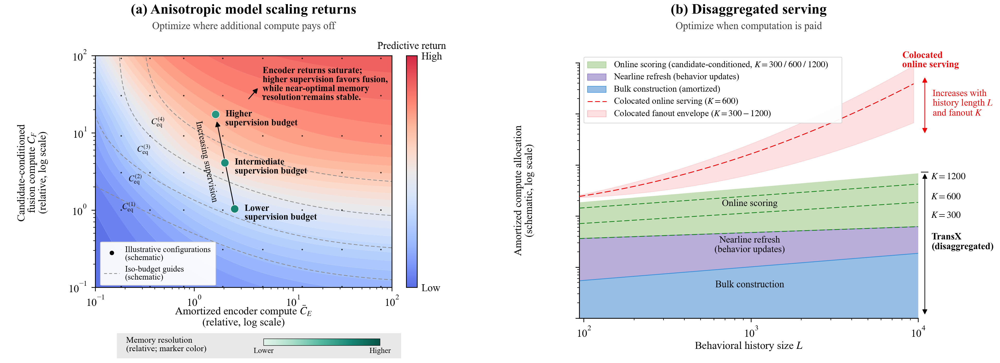
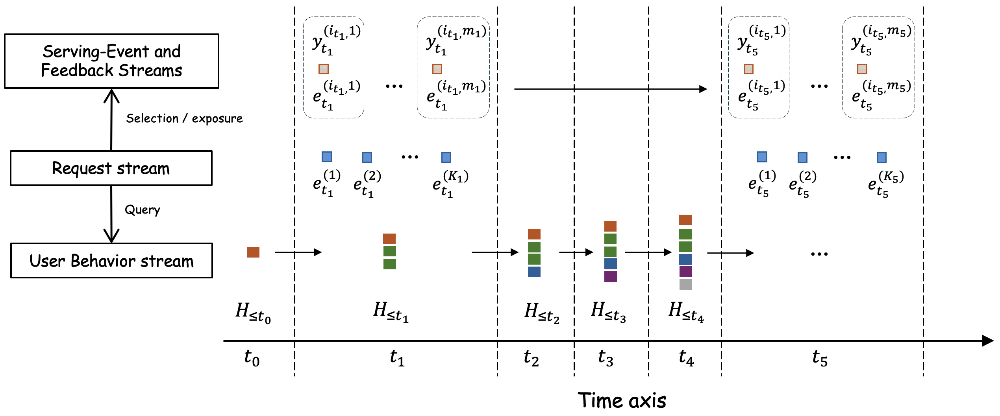
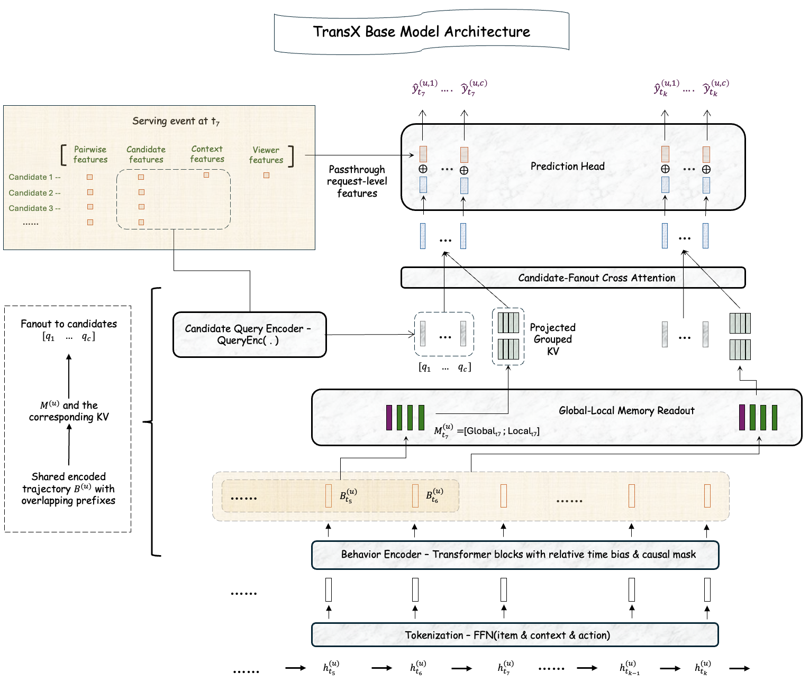
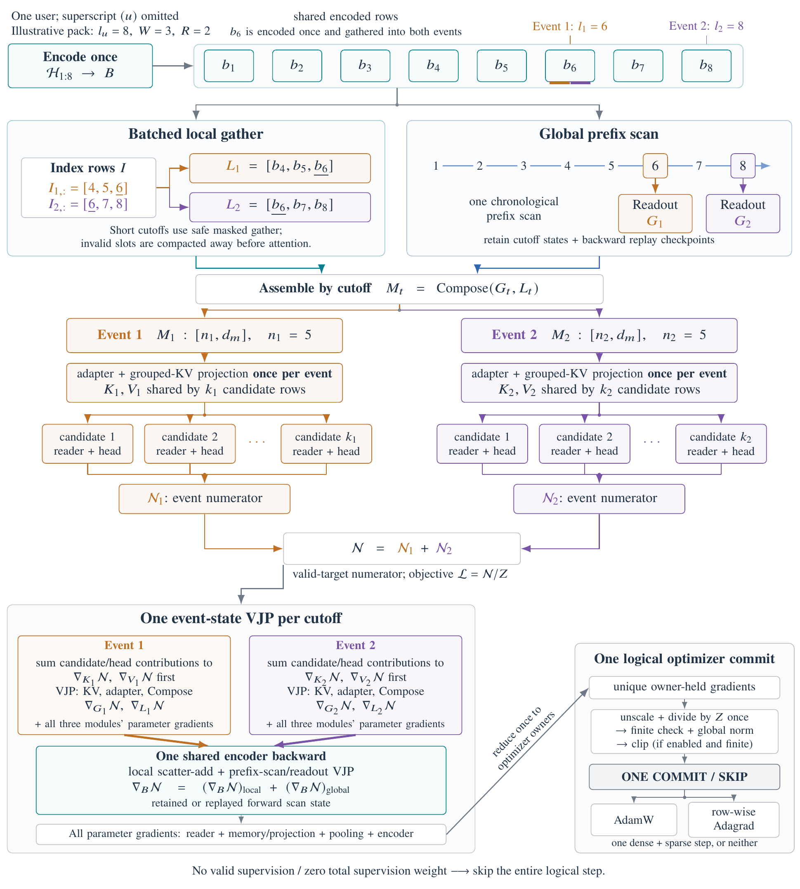
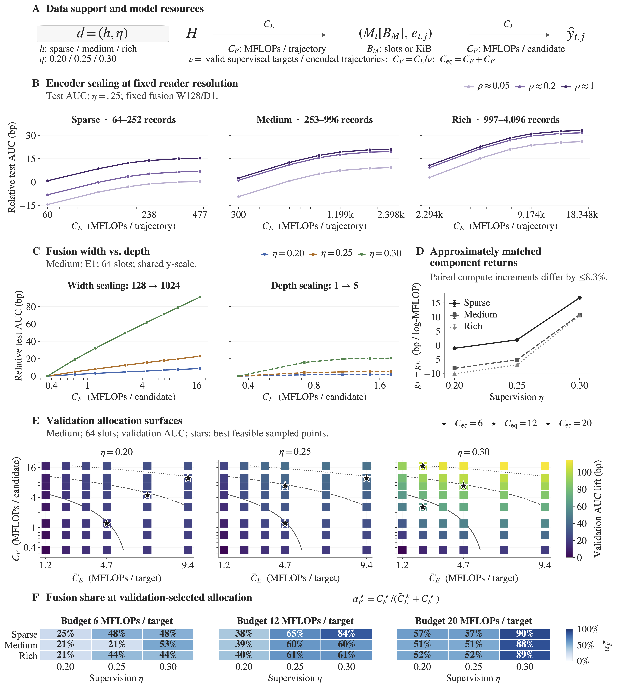
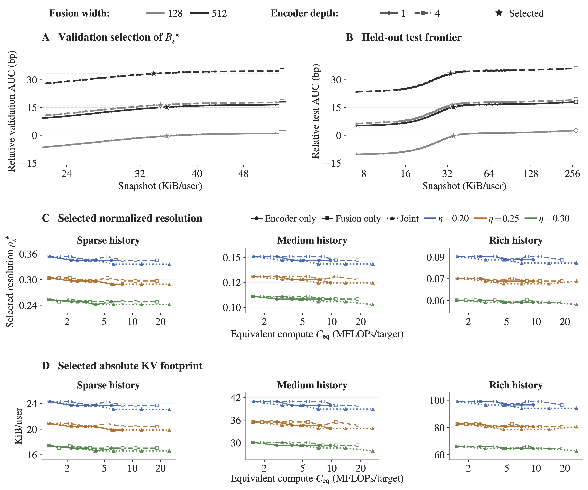
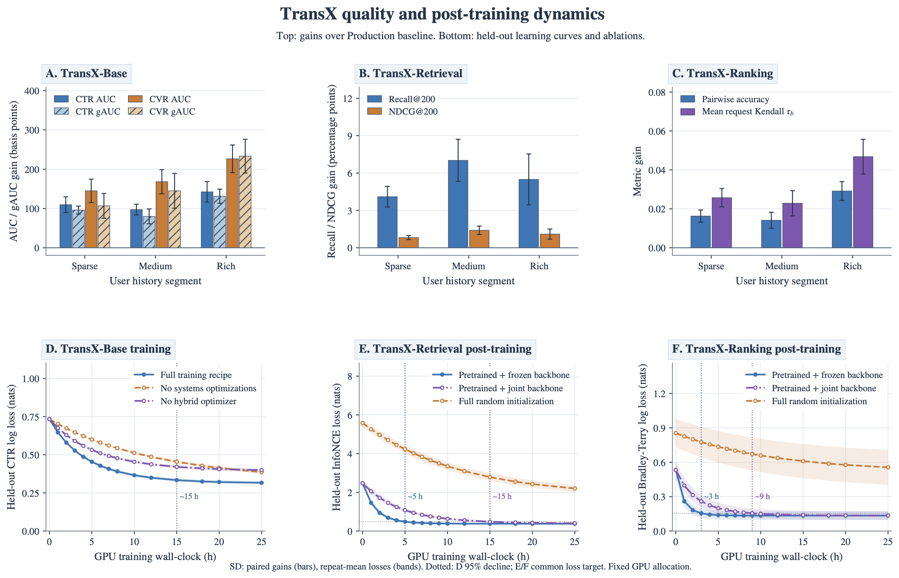
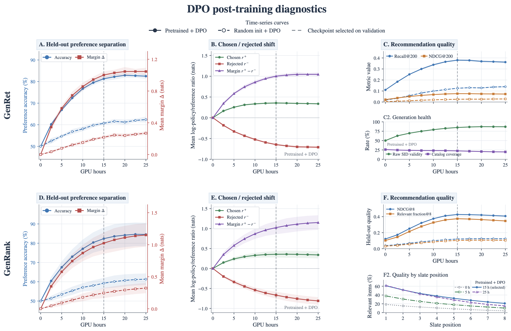
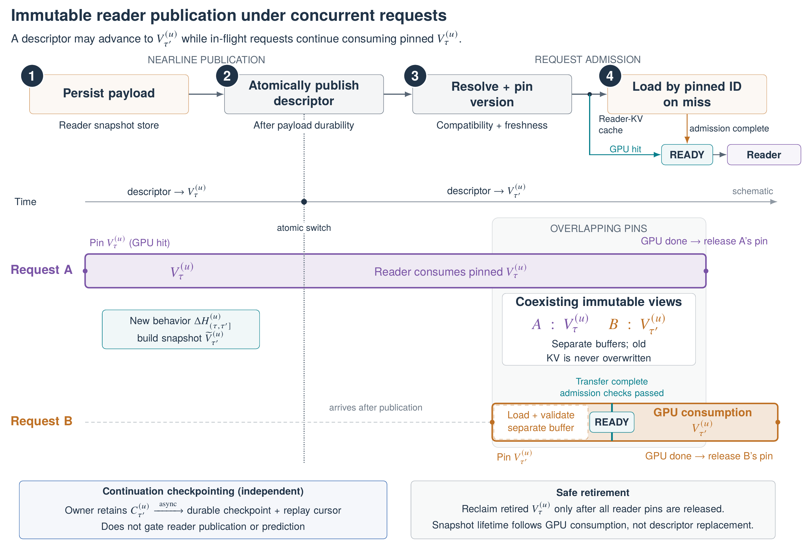

TransX 技术报告: 面向推荐系统的序列转导规模化扩展
摘要
我们提出 TransX，这是一套用于工业推荐规模化扩展的序列转导框架及协同设计的基础设施，可显式控制模型计算分配与执行摊销。TransX 将序列编码、行为记忆和候选条件融合分离为可独立扩展的计算角色。训练时，跨行为前缀摊销因果轨迹计算，并将记忆状态扇出至候选；推理服务则通过紧凑的行为记忆 KV，将批量预填充、近线刷新与在线预测分离。
我们通过实验观察到，扩展收益具有各向异性：在记忆分辨率和融合容量固定时，编码器扩展超过中等深度后可能趋于饱和；增加监督会使分配前沿向候选条件融合侧移动；而随着模型容量增长，维持质量所需的记忆分辨率大体保持稳定。我们以点击和转化任务训练 TransX 核心模型，随后对共享行为接口进行后训练，以实现检索与偏好排序，并在离线环境中探索生成式推荐。
在各自独立的生产 A/B 实验中，相对于对应的生产基线，TransX 核心模型使 CTR 提升 6.02%、转化提升 4.45%，而后训练得到的检索与偏好排序变体分别使 CTR 提升 2.96%、转化提升 1.33%。在匹配的训练条件下，协同设计的训练基础设施使监督目标吞吐量提升 84%。 在推理服务中，在流量和 SLO 匹配时，分离式执行相对于共置推理服务将 TransX 的总服务成本降低近 ，使部署系统能够在相同总服务成本下，将每请求模型 FLOPs 提高到 HSTU 风格生产基线的约 。即便在每请求模型 FLOPs 匹配时，TransX 在每块 H200 上仍能实现约 的请求吞吐量。 这些结果共同表明，推荐模型容量的规模扩展并不必然导致在线服务成本同比例增长。

1 引言
长行为历史为推荐系统提供了有关持久偏好、兴趣演变和即时意图的证据 (Boka et al., 2024)。近期扩展推荐模型规模的工作主要着眼于提升序列处理能力：利用更长的历史，为其分配更多模型计算，并通过服务栈工程支撑由此产生的工作负载 (Zhai et al., 2024; Chai et al., 2025)。然而，当额外计算被置于在线服务路径时，其成本会随在线预测需求直接增长。因此，推荐系统的规模扩展不仅关乎预测收益，还关乎计算放在何处，以及必须以何种频率执行。
这引出了两个更为根本、却容易被笼统的计算规模扩展所掩盖的问题：
应该扩展哪些计算组件，才能推进推荐质量前沿？推进这一前沿是否必然使在线服务成本同比例增长？
回答这些问题，自然会导向模型与基础设施的协同设计。第一个是模型设计问题：架构必须显式呈现那些容量可沿不同轴扩展的计算组件。第二个是基础设施设计问题：这些组件应在各自指定的摊销范围内、由指定条件触发执行，而非全部在请求到达时执行。
这两个设计问题通过模型的计算—状态分解相互耦合。同一套计算分解既揭示了不同的扩展轴，也界定了可跨越其进行计算摊销、重算和分离式执行的状态边界。
我们开发了 TransX，这一序列转导框架具体实现了上述模型与基础设施协同设计原则。其模型架构显式区分了三种计算角色：
-
1.
序列编码。 因果编码器独立于当前候选，对不断演变的行为轨迹进行变换，从而能够跨预测事件摊销重叠前缀上的计算。
-
2.
行为记忆。 有界的全局—局部记忆将已处理历史的量与提供给下游预测的行为表示分离，使记忆分辨率成为一个显式扩展轴，同时将记忆暴露为可复用的状态边界。
-
3.
候选条件融合。 作为任务特定预测路径的一部分，候选查询通过交叉注意力读取共享记忆。行为记忆 KV 在候选扇出间共享，同时保留候选特定的融合。
这一分解显式界定了摊销边界：共享前缀上的行为状态构建及其增量刷新可跨请求与候选扇出摊销，而只有以预测为条件的计算才随请求和候选需求扩展。
基础设施在执行中保留并利用同一分解，将模型设计转化为显著的系统级效率收益。训练期间，每条轨迹中的变长行为前缀共享一次因果编码，而每个前缀处的候选扇出共享一个事件状态。服务期间，批量（离线）工作进程和近线工作进程在模型上线及行为更新时构建和刷新行为状态；在线工作进程则使用有界、不可变的行为记忆 KV 缓存，进行候选条件预测。因此，依赖历史的计算主要在行为状态初始化或刷新时执行，而在线服务路径集中于状态访问以及以请求和候选为条件的预测。
这一分解也使我们能够研究不同计算分配如何推进推荐质量前沿。扩展实验表明，各扩展轴上的边际收益并不相同：在行为记忆分辨率固定时，编码器扩展能够改善预测，但在融合容量固定时，超过中等深度后便趋于饱和；增加监督会使分配前沿向候选条件融合侧移动；即使整体模型容量增长，维持质量所需的记忆分辨率仍大体保持稳定。这些结果共同提示，高效扩展是一个计算分配问题：新增容量应依据各组件的边际收益进行分配，而非对所有计算角色同比例增加。分离式基础设施通过在在线服务路径之外摊销依赖历史的计算，在执行中保留了这种分配带来的收益，从而减弱历史侧模型容量与在线服务成本之间的耦合。
最后，我们复用同一行为记忆接口，以实现不同推荐任务的能力专门化。我们先针对响应预测训练 TransX 主干，再针对检索、偏好排序和生成式推荐，对能力特定的记忆读取器及输出头进行后训练。核心训练学习一个可复用的行为记忆接口；后训练则专门化各项能力查询该接口、并将其映射为任务特定输出的方式。
本工作的贡献如下：
-
•
将推荐建模为请求条件序列转导。 我们将推荐表述为针对演变中的行为流反复进行的请求级查询，并显式给出由序列编码、行为记忆和候选条件融合组成的计算—状态分解。这一分解识别出可跨服务事件及候选扇出共享的模型状态。
-
•
面向摊销执行的模型与基础设施协同设计。 同一计算—状态分解界定了多前缀序列到序列训练、序列—扇出并行、分层 KV 驻留及分离式推理服务所保留的复用与重算边界。 因此，昂贵的序列计算能够跨重叠前缀摊销，并在行为状态发生变化之前，于请求路径之外执行。
-
•
对扩展收益与计算分配的实证刻画。 受控实验分别改变行为编码器计算量、行为记忆分辨率和候选条件融合计算量，揭示出这些扩展轴上不均等的边际收益：在融合容量固定时，编码器收益在超过中等深度后趋于饱和；增加监督会使验证集选出的分配向候选条件融合侧倾斜；而随着模型容量增长，维持质量所需的记忆分辨率大体保持稳定。
-
•
基于共享行为记忆接口的能力专门化。 我们保留行为记忆接口，同时针对检索、偏好排序和生成式推荐，对能力特定的记忆读取器与输出头进行后训练。核心、检索和排序变体的生产部署，进一步从推荐质量、训练效率和服务经济性等方面验证了该框架。
我们在一个大规模社交推荐应用中评估 TransX，该应用每秒约处理 20K 个请求，每个请求包含约 0.5K–1.2K 个候选。在各自独立的生产 A/B 实验中，相比生产序列模型基线，TransX-Base 使点击率（CTR）提升 、转化提升 ；相比生产序列双塔模型基线，TransX-Retrieval 使 CTR 提升 ；相比 DLRM 学习排序基线，TransX-Ranking 使转化提升 。在匹配的训练条件下，优化后的执行流水线使监督目标吞吐量提升 。生产服务进一步表明，依赖历史的计算可以移出在线服务路径，同时保持有界的行为记忆 KV、近线新鲜度，以及对延迟敏感的候选评分。
综上，这些结果促使我们将推荐系统的规模扩展视为计算分配与摊销／分离式执行的联合问题。核心问题不只是增加多少计算，而是新增容量在何处能够带来最大的预测收益、每个组件何时必须重算，以及其状态可在多大范围内复用。TransX 通过一种联合控制模型容量、行为记忆分辨率和执行位置的计算—状态分解实现了这一思路，使推荐质量前沿得以推进，而无需在线服务成本同比例增长。
2 问题表述
我们首先形式化工业推荐系统底层的预测接口。用户产生不断演变的行为轨迹，而推荐请求流则按独立的时钟到达，并带来需要评分的候选集合。模型先为这些候选生成预测，随后下游选择过程决定哪些物品获得曝光，以及之后能够观测到哪些响应。
我们从行为—请求—曝光—反馈过程及其因果信息边界出发，将推荐表述为请求条件序列转导：用户的连续请求查询其不断演变的行为轨迹中、满足截止点有效性要求的前缀。最后，我们识别出候选无关的行为状态构建与候选条件预测之间由此产生的摊销边界。这一边界为第 3 节的架构、第 4 节和第 5 节的执行设计，以及第 6 节的计算分配分析提供了形式化基础。
2.1 数据与预测接口
| User index. | |
|---|---|
| Request index. | |
| Behavior timestamp/index, not necessarily aligned with request index . | |
| Candidate index within a request. | |
| Number of candidate queries scored in request and number of candidates exposed, where . | |
| Identity of candidate in request . | |
| number of request/serving events considered for user . | |
| Prediction-time features for , including user attributes, candidate attributes, user–candidate interaction features, and request-level context shared across candidates, available at scoring time. | |
| Candidate-query record . | |
| Candidate-query set scored in request . | |
| Ordered indices of candidates selected for exposure. | |
| Served/exposed slate selected from . | |
| Observed response for an exposed candidate where is the outcome space. | |
| Feedback aligned with the served slate . | |
| Tokenized user behavior at behavior time . | |
| User-behavior stream. | |
| Prefix of the behavior stream available when request is scored. | |
| Number of behavior records available to user when request is scored; equivalently, . | |
| Collection of predicted response distributions for the candidate queries in request . |
我们区分请求与服务事件：前者定义了模型需要评分的候选集合，后者包含最终被选中并向用户曝光的子集。由此得到的数据流为
候选查询请求。
在请求 中，排序系统对 个候选查询进行评分：
其中， 标识候选 ， 包含候选评分时可用的用户、候选、用户—候选、请求及其他特征。有序请求流为
选择与曝光。
模型为全部 个候选查询生成响应预测。随后，曝光策略选择 个候选，
其中每个 ，并输出服务列表
因此，模型生成响应预测，而排序与选择策略决定曝光。只有在选择或曝光之后才显现的特征，不能进入此前的候选评分器。
反馈。
曝光后，用户可能针对服务事件中的候选产生显式或隐式反馈：
因此，反馈的位置与被曝光的候选对齐，而非与请求中所有经过评分的候选对齐。相应的反馈流为

用户行为流。
独立于目标排序系统的时序，用户会产生更广泛的活动序列，例如 search、profile view、connect，或与先前已服务内容的交互。我们将词元化的行为流记为
行为时钟 无需与请求时钟 对齐：相邻请求之间可能有多个行为变为可用，而多个请求也可能观察到同一行为前缀。
我们用 表示请求 被评分时可用的行为记录的有序前缀。 因此，行为流与请求流可以按照不同的时钟演变。前者提供可跨请求共享的历史证据，而每个请求则引入一组新的、候选特定的预测查询。下面介绍的请求条件序列转导表述刻画了这种异步结构。
2.2 请求条件序列转导
序列转导将输入序列映射为输出序列，而不要求两个序列长度相同或逐位置对应 (Sutskever et al., 2014)。推荐天然具有这一结构：输入是不断演变的行为序列，而预测输出则出现在另一条独立的请求序列上。
对于用户 ，我们写作
其中
因此，转导器为请求中的每个候选查询生成一个响应预测。
只有被曝光的候选，才能从日志事件中获得直接的响应监督。因此，用户级训练目标为
未曝光候选的预测参与排序，但无法从该请求中获得直接的日志响应监督。
我们将这一表述称为请求条件序列转导：在实际发生的请求和候选上下文下，对不断演变的行为轨迹进行反复查询。行为流决定了每个请求可用的历史证据，而请求决定了应如何读取这些证据，以解决当前的预测问题。
2.3 记忆扇出与摊销边界
序列转导的表述揭示了候选无关的行为状态与候选条件交互之间的计算边界。我们通过四个抽象算子概括该架构。
给定行为前缀，
其中， 生成在请求 时具有因果可用性的上下文化行为表示。随后，记忆构建算子形成面向读取器的状态
这两个阶段均独立于当前请求中的候选。
对于每个候选查询，通过下式得到相应的候选条件表示：
其中， 表示候选查询。然后，将融合表示与请求级特征一同送入预测头，以预测该任务的目标：
因此，一份共享记忆扇出至全部候选查询：
这种候选查询扇出界定了请求摊销边界。构建有效行为记忆所需的计算，可以由请求内全部候选查询共享；只要记忆版本保持有效，也可以跨后续请求共享。候选条件融合与响应预测则随请求及候选需求扩展。因此，这一边界避免了为每个候选重新编码一次历史，但并未消除依赖候选的记忆访问、交互或输出计算。
由此形成的两个摊销范围为：
排序与曝光过程在上述预测计算之后进行：
计算上的含义
当从工作负载层面表述时，摊销边界带来的计算影响便更加清晰。令 表示行为更新速率， 表示推荐请求速率， 表示每个请求的平均候选扇出。令 表示增量推进行为状态并发布兼容读取器快照的成本， 表示解析和准备该共享状态的请求级成本， 表示候选条件融合与预测成本。于是，稳态下归因于一个请求的计算量近似为
相比之下，请求同步式设计会在每次预测请求到达时重建以历史为条件的状态，其成本近似为
其中， 随在线服务路径上处理的历史量增长。因此，跨请求摊销用按行为更新速率付出的状态维护成本，替代了按请求速率付出的历史计算成本；而候选扇出摊销使共享的历史侧计算不受 这一乘数影响。当行为状态可支持多个后续请求，且每个请求扇出到大量候选预测时，由此产生的优势会增大，但还须计入维护物化状态所需的额外存储、传输、新鲜度和恢复成本。这些表达式旨在分解工作负载，而非构成完整的服务成本模型。
3 模型架构
架构设计的核心挑战，是在能够选择性扩展容量并摊销执行的粒度上显式划分计算，同时不牺牲各候选对行为证据的专属访问。TransX 通过三个相互耦合的组件应对这一挑战：对持续演化的行为历史进行变换的因果序列编码器、控制向预测端暴露的状态的有界行为记忆，以及为每个候选读取这一共享状态的候选条件融合。图 3 展示了由此形成的架构。

3.1 序列词元化与编码
为简化记号，当用户索引可由上下文明确确定时，我们省略上标 。行为编码器将可用历史 映射为上下文化的行为表示。历史交互上下文与每个过去的行为一起编码，而当前用户、请求和候选的上下文仅通过服务时的查询与预测路径进入模型。
上下文化的用户行为词元。
一条行为记录表示一次已观察到的交互及其发生时的上下文：
| (1) |
其中， 表示交互实体及其属性， 表示动作类型， 表示历史交互上下文， 表示数值特征， 表示可用的预训练表示， 表示事件时间戳， 则表示该记录满足序列编码可用条件的时刻。例如，历史上下文可以包括交互界面、入口、曝光位置，或与该事件关联的选定用户–实体属性及用户状态属性。
一旦词元化后的字段可用，记录便满足可用条件；后续的修正或信息补充需要显式刷新表示。
共享特征嵌入与词元化。
类别字段使用各自专属的嵌入表，对多值属性在字段内执行池化。动作类型由专门的嵌入表示。数值特征经过变换和归一化，预训练表示则通过各来源专属的可学习投影进行映射。缺失值使用显式的 missing 标记。
我们定义一个共享的记录到词元映射
| (2) |
其中
| (3) |
随后记 。 对于命名空间和语义相匹配的字段，候选查询路径复用相同的词元化接口和嵌入表。
时间因果自注意力。
词元序列通过标准 Transformer 块进行上下文化，其中包含多头因果自注意力、逐位置前馈网络、残差连接和层归一化 (Vaswani et al., 2017)。对于注意力头 ，我们使用
| (4) |
其中， 为查询/键维度， 是可学习的相对时间偏置 (Xu et al., 2019)，并且
| (5) |
因果顺序由记录的可用性顺序决定。由于发生时间戳在这一顺序下不必单调， 定义在带符号的时间差上。因果掩码落实信息边界并排除填充，而相对时间项表示事件间经过的时间。
当 时，行为序列编码器产生
| (6) |
在词元化器/编码器版本固定、可用性顺序保持追加一致性的条件下，追加后续记录不会改变已有的前缀状态，因此这些状态能够在不同服务事件间复用。
空历史。
当没有有效的行为记忆可用时，请求被路由至指定的非序列回退模型，仅使用服务时特征。
3.2 行为记忆
向每个候选读取器暴露全部 个状态，会使在线服务路径上的计算、状态传输及缓存占用与历史长度直接耦合。因此，TransX 构造了一种有界、与候选无关的行为记忆
其中， 是记忆构造机制， 表示请求 时可用的行为记忆状态数量， 是行为记忆状态的维度。这将编码的行为历史量与暴露给预测端的记忆状态数量分离开来。
全局–局部记忆。
我们的主要实现将高分辨率的近期窗口与较低分辨率的早期行为摘要相结合。令 表示局部窗口大小。局部分支保留最近的编码状态，
而此前的历史被划分为因果支持集，并压缩成一组数量有界的全局摘要状态，
为简化记号，我们在正文中将全局分支描述为对局部窗口之前的历史进行逐块池化。附录 A.2 详细说明了如何使用分块前缀扫描，在不同事件间高效计算对应于特定截止点的块摘要。 池化可以固定，也可以学习，并可应用于分块以形成逐块摘要。投影到共同的记忆宽度后，
因此，读取器既能精确访问近期行为，又能以压缩形式覆盖更长范围的历史，同时读取器可见的状态数量保持有界。
这一构造区分了两个原本容易混淆的量：历史支持范围决定可以从行为轨迹中多远的位置获取信息，而记忆分辨率决定向读取器暴露多少最终表示。因此，编码长行为历史时，读取器序列无需按比例变长。 第 6 节在扩展行为计算与行为记忆分辨率时，显式研究了这一区别。
因果可用性。
每个读取器可见的记忆状态，都仅由相应预测截止点之前可用的行为构造。对于每个记忆槽 ，
因此，无论局部保留还是全局池化，都不能向更早的预测暴露未来的观测。
3.3 候选查询
候选查询复用式 2 中的行为词元特征接口和兼容的嵌入表，但使用独立的查询编码器。对于候选 ，在服务事件 时， 包含在响应被观察到之前可用的预测时刻候选特征与上下文特征。其动作字段被设为专门的 unknown-action 符号，与所有已观察到的动作类型不同，使查询构造既与历史词元化保持兼容，又不会暴露目标响应。
候选表示为
| (7) |
其中， 是候选查询的维度。
| Field group | Historical behavior token | Candidate query |
|---|---|---|
| Item features | Observed interacted item | Candidate |
| Context | Historical interaction context | Serving-time context |
| Action | Observed action | unknown-action |
| Embeddings / tokenizer | Shared | Shared |
| Encoder | Behavior encoder | Query encoder |
3.4 扇出与迭代查询融合
前述阶段产生共享行为记忆 和候选查询 。 TransX 通过候选扇出交叉注意力将二者融合。实现采用分组查询注意力（GQA），所有候选共享行为键和值，多个查询头还进一步共享每个 KV 头 (Ainslie et al., 2023)。
分组查询交叉注意力融合。
令 表示查询头的数量， 表示键–值头的数量，其中 整除 。定义
以将每个查询头分配到一个键–值组。各组大小相等时，每个键–值头由 个查询头共享。 和 的情形分别退化为多查询注意力和标准多头注意力。
迭代记忆读取。
TransX 可以堆叠 个交叉注意力读取器块，在同一行为记忆上执行迭代的候选条件读取。 令 。在读取器块 中，GQA 运算以 为查询状态，并采用该层专属的投影，而 保持不变。得到的读取结果按如下方式整合：
| (9) | ||||
最终的候选条件表示为 。 由于每个块都会在下一次读取前更新候选状态，后续块可以以前面块检索到的证据为条件，重新对 计算注意力。因此，读取器深度通过迭代记忆访问提升候选–历史交互容量，而无需修改或复制共享行为记忆。
候选扇出摊销。
在服务事件 中，历史侧计算仅执行一次，并由 个候选查询共享；候选条件融合与预测则随扇出规模扩展：
因此，共享历史侧成本对每个候选的贡献为 ，同时候选专属交互仍保有充分的表达能力。GQA 通过在查询头之间共享投影后的行为 KV，提供了额外且正交的成本削减。
3.5 并行响应预测
响应预测头将每个候选条件表示 与预测时刻的用户、请求、候选及用户-候选成对特征相结合，产生响应概率：
| (10) | ||||
这里， 对服务时特征进行嵌入， 则通过特征交叉与逐候选预测模块，将这些特征与检索到的行为证据结合。在实践中，可以通过更丰富的特征交互独立扩展预测头容量，而无需增大行为记忆。上述形式对候选并行评分，不包含候选间注意力或自回归依赖；第 7.3 节为生成式推荐放宽了这一约束。对于二元响应任务， 通过 sigmoid 对输出 logits 进行映射。
预测头
逐行应用于 个候选：
| (11) |
其中， 包含与 对齐的特征记录。
4 核心训练
TransX 首先在记录下来的服务事件上训练为响应预测模型。核心目标是给定当前请求与用户 的行为历史，预测点击和转化响应，例如
这一阶段学习行为编码器、记忆接口、候选条件读取器和预测头，随后第 7 节中的各项专门化复用这些组件。
4.1 打包训练单元
推荐日志通常以每个曝光候选对应一条记录的形式物化；同一服务事件中的候选共享相同的用户、预测时刻上下文和满足可用条件的行为历史。因此，我们将保留的行为轨迹及其关联的服务事件流作为基本训练单元，而非单条候选记录或单个事件组。
对于用户 ，令
表示用户 的打包行为轨迹，其中 表示打包轨迹中保留的行为记录数量。服务事件 包含曝光候选集合及已成熟的响应
以及行为截止点 ，后者指明该事件被评分时可用的前缀。因此，一个打包训练单元为
事件 中的所有候选共享相同的因果行为状态
但仍是不同的预测目标。同样，同一用户的连续事件通常观察到同一轨迹中相互重叠的前缀。因此，打包表示保留了第 2 节所识别的两种摊销结构：不同事件截止点之间共享行为计算，以及不同候选目标之间共享事件记忆。
4.2 多前缀序列到序列训练
4.3 稠密–稀疏混合优化
5 模型与基础设施协同设计
只有在执行中保留计算—状态分解所蕴含的复用结构，这种分解才有实际价值。因此，TransX 将同一层次结构映射到训练与推理服务中。具体而言，训练执行
而不重复共享计算；推理服务则维持
这些组件按照不同的时钟运行，并具有不同目标：续算状态随新行为到达而推进，已发布的行为记忆仅在刷新后的状态被提交时才改变，而候选条件计算由每个请求触发。因此，基础设施对这些组件独立进行调度、放置和扩展，同时保留模型的因果信息边界与预测语义。
5.1 执行模型
表 3 概括了 TransX 模型设计所产生的执行对象、它们的多重性及摊销范围。架构决定哪些状态和计算可以共享；基础设施决定如何对它们进行分区、放置、传输和缓存。我们使用 标记某个服务状态版本所表示的行为截止点，从而将服务状态版本与请求索引 区分开。
| Logical object | Multiplicity | Amortization scope | Primary system implication |
|---|---|---|---|
| Encoded trajectory | Per packed trajectory | Multiple supervised event cutoffs | Sequence throughput and activation memory |
| Event memory / projected KV | Per event cutoff | Candidate rows and sharing query heads | Fanout efficiency and communication |
| Candidate-conditioned computation | Per candidate | No cross-candidate dependence | Dense batching and GPU utilization |
| Encoder continuation state | Per represented behavior version | Successive behavior updates | Freshness, restoration, and replay |
| Published behavior-memory KV | Per published behavior version | Requests and candidate batches | Storage, transfer, and online latency |
| Request-local state | Per request | Candidate execution batches | SLO enforcement and temporary memory |
执行必须保留两项契约。训练期间，每个事件仅读取在因果上有效的行为状态，候选共享同一份事件记忆，扇出梯度在进入共享轨迹图之前重新汇合。 推理服务期间，续算状态仅用于维护，已发布的行为记忆 KV 不可变且版本兼容，状态恢复始终位于在线服务路径之外。
5.2 训练基础设施
第 4 节在逻辑上将训练定义为打包行为轨迹上的多前缀计算：多个服务事件读取同一轨迹的不同因果前缀，每个事件内部的多个候选损失读取同一份事件特定记忆。训练系统必须在不改变语义的前提下实现这一目标，同时避免独立物化每个 目标所造成的重复工作。
因此，实现上的挑战是从一条编码后的轨迹构建 这些记忆及其候选扇出，而不分别物化 个相互重叠的前缀。第 5.2.1 节通过批量局部聚集和共享的全局前缀扫描解决这一问题；随后，第 5.2.2 节将得到的轨迹—事件—候选图映射到分布式执行。
5.2.1 批量局部聚集与全局前缀扫描
第 4.2 节定义了这样一种逻辑计算：多个服务事件从一条因果行为轨迹读取在各自截止点有效的不同记忆。下面介绍如何在不独立重建每个合格前缀的情况下，物化这些记忆。
对于用户 的一条打包轨迹，令 表示截至所选最大截止点的因果编码，事件截止点为 。令 表示局部记忆宽度， 表示行为记忆中保留的全局汇总状态的最大数量。
批量局部聚集。
对于局部记忆宽度 ，将局部位置 在事件 中对应的源索引定义为
其有效性掩码为
随后，通过对 进行一次带掩码的聚集，即可构建固定形状的局部记忆张量
或者整体写作
无效位置在记忆构建前被掩蔽。因此，所有局部窗口通过一次批量操作提取，而重叠窗口仍然引用相同的已编码轨迹状态。
这一过程仅将 个状态移动到事件局部记忆中，而不是像独立重建每个行为前缀那样物化 个状态。
全局前缀扫描。
全局记忆由沿行为轨迹按结合律组合的充分状态构建。对于任意连续片段 ，令 表示其充分状态。对于相邻片段 和 ，要求
其中 满足结合律且单位元为 。直观地说， 是一个连续片段的可合并摘要；通过合并覆盖事件特定全局块各自支撑集的片段状态，即可得到这些全局块。具体来说，用 表示编码后行为 所贡献的单元素状态，则并行前缀扫描 (Blelloch, 1990) 计算
对于事件 ，令 表示其全局记忆块的连续支撑集。相应的全局摘要为
全局记忆库为
由于充分状态满足结合律组合，多个事件截止点所需的统计量可以共享，而无需分别重算。附录 A.2 给出了在相互重叠的事件前缀间构建这些片段状态时采用的精确分块实现。
例如，我们的全局—局部记忆采用的可学习标量注意力池化器，就具有这样的结合式充分状态。给定分数 ，对于任意连续片段 ，定义
以及
那么充分状态为 其读出为
对于相邻片段，这些状态通过相同的 log-sum-exp 重缩放 (Dao et al., 2022) 进行精确合并，使 满足结合律，从而能够通过并行扫描和归约构建所需块摘要，而不改变精确的池化结果。
事件记忆物化。
令 表示用户 在事件 处对读取器可见的行为记忆状态数量。事件 的行为记忆由聚集得到的局部状态和全局摘要库组装而成：
随后，每个事件执行一次记忆适配器与共享 KV 投影，
与事件 关联的全部候选行接着使用这一共同的投影状态。由此得到的执行遵循第 4.2 节的逻辑结构：对轨迹编码一次，提取多个截止点的记忆，并且仅在紧凑事件状态构建完成后才进行扇出。
在实践中，相对于在我们的 H200 GPU 集群上按事件物化前缀编码，这些优化在前缀执行基准中将受监督候选吞吐量（candidate targets/s）提高至 ，将编码行为吞吐量（behavior tokens/s）提高至 ，同时将平均前向传播 MFU11 1 MFU 为 ，在预热结束后的整个区间内，以 H200 稠密 BF16 Tensor Core 峰值（不计稀疏性增益）为基准测量。模型 FLOPs 按每次乘加两次 FLOPs 计入稠密运算，训练计入前向与反向传播，推理仅计入前向传播。嵌入查找、通信、优化器更新和数据移动不计入模型 FLOPs，但仍体现在实际耗时中。 从 提高到 。对于生产环境中的轨迹长度分布，在我们的基准测量中，重复前缀物化的峰值激活 HBM 为 GiB/device，而批量截止点提取为 GiB/device。

反向聚合。
对于标量损失 ，用 表示相对于中间张量 的反向模式梯度。令
表示候选／扇出分区 贡献的 KV 梯度。来自所有候选行及共享 KV 的查询头的贡献在事件边界处求和：
通过共享 KV 投影和记忆适配器执行一次反向模式 VJP，即可得到事件记忆的梯度，
随后，通过事件记忆组合进行反向传播，得到局部与全局分支的梯度，
局部记忆梯度通过带掩码聚集的伴随算子累加至共享的已编码轨迹，
类似地，全局记忆梯度通过分块前缀扫描和块读出的伴随算子传播，
因此，在累加完所有选定事件的梯度后，共享编码器接收到
5.2.2 序列—扇出并行
第 5.2.1 节消除了打包轨迹内冗余的前缀物化。剩余的系统问题是：如何分布执行这些共享计算，而不让轨迹、事件和候选的多重性转化为重复的编码器工作。具体而言，序列侧并行对共享因果轨迹进行分区，而扇出并行仅在紧凑事件状态构建完成后，才对候选条件计算进行分区。
序列—扇出分解。
对于足够长的轨迹，一个并行度为 的序列工作组沿行为位置划分因果编码器。在提取完事件 在特定截止点的局部和全局状态后，由一个逻辑事件所有者组装行为记忆，并执行记忆适配器和分组 KV 投影：
随后，事件的候选行由一个并行度为 的扇出工作组划分，
因此，增加 不会再实例化一个行为编码器，也不会重复记忆构建。并行度 与 描述的是逻辑分区维度，不必对应互不相交的硬件资源池。
实验中可以观察到这种分离。将事件扇出从 64 个候选增加到 512 个候选时，每个事件历史侧编码器 FLOPs 的变化小于 ，而在行为记忆或通信饱和之前，候选吞吐量约提高至 。因此，这种扩展行为反映的是增加了候选侧并行性，而不是重复历史计算。
以事件状态为通信边界。
事件所有者构成了序列侧计算与候选扇出之间的边界。序列侧进程仅提供事件 所需的局部状态和全局扫描输出；事件所有者组装 ，并对其紧凑 KV 进行一次投影。随后，候选工作进程为各自分配到的候选块使用这一共同的投影状态。因此，跨边界通信操作的是事件级 KV，而非独立物化的行为前缀。
反向传播以相反方向遵循同一所有权结构。现在，用 和 表示扇出工作进程 产生的 KV 梯度。在事件边界将其归约为 之后，事件所有者执行前一节的两阶段反向计算，先得到 ，再得到 。
之后，局部和全局梯度通过第 5.2 节中的分散加法与前缀扫描伴随算子，重新进入共享轨迹。因此，在梯度返回共享轨迹图之前，候选的多重性已经消除。
感知扇出的执行与通信重叠。
在每个事件内，候选工作进程将共享同一分组 KV 的候选—头行进行批处理。原生融合 GQA 避免了显式逐候选复制 KV；在有益时，事件级 KV 块保持驻留，同时处理多个候选块，并在本地累加它们的 KV 梯度。
通信与独立的事件工作和优化工作重叠执行：一个事件的投影 KV 可以在另一个事件执行行为记忆计算时传输；已完成的事件 KV 梯度可以在其他候选块继续计算时返回；已经收齐贡献的稠密梯度或稀疏行归约可以在剩余反向传播期间进行。在测得的模型训练工作负载中，这种重叠将未被隐藏的通信从每步实际耗时的约 降至 。
保持目标不变的分布式执行。
物理分区必须保留第 4.2 节的逻辑训练目标。损失的分子在全局有效的监督目标上累加，所声明的归一化仅在逻辑更新边界应用一次。类似地，对于稠密参数或稀疏嵌入行，同一步的全部梯度贡献必须在相应的非线性优化器更新之前合并。因此，序列和扇出分区改变的是物理执行图，而非目标或优化器语义。
底层参数与嵌入分片使用标准分布式原语；TransX 特有的执行机制是轨迹打包、多截止点记忆提取、事件状态所有权以及序列—扇出调度。
5.3 分离式推理服务

摊销边界产生了按不同时钟运行的推理服务工作负载：部署新模型或新表示时，必须构建行为状态；新用户行为到达时，必须推进状态；推荐请求发出时，则使用状态。这些工作负载具有根本不同的执行目标：批量构建面向吞吐量，增量维护受新鲜度约束，在线预测则对延迟敏感。若将它们共置在同一调度器下，就会耦合那些批处理、局部性及尾延迟要求互不相容的工作负载。
因此，TransX 将推理服务分离为三个阶段：批量状态构建、近线增量维护和在线预测。这并非与请求同步的生产者—消费者流水线。依赖历史的状态通常在预测请求到达前便已构建或刷新；在线服务使用已物化的状态，而不是同步推进行为编码器。因此，系统按照使既有计算失效的信息到达速率执行工作：模型部署触发面向整个用户群体的构建，行为更新触发状态维护，预测需求仅触发请求条件与候选条件计算。
这一边界由两个持久状态对象表示。编码器续算状态
是可变的维护状态，其中包含推进因果编码器所需的信息，包括编码器 KV、时间元数据、池化状态、近期输出和回放位置。在推理服务的记号中，我们用
表示已发布的行为记忆 KV 快照：它是行为记忆的有界、不可变投影，由在线预测使用。只有批量与近线工作进程能够推进 并发布新的 ；在线请求只解析并固定兼容的 ，而不恢复或推进 。
这种分离使三种工作负载可独立调度与扩展，同时保留共同的模型接口。批量处理容量随模型上线和回填需求变化，近线容量随行为到达和新鲜度滞后变化，在线容量则随请求流量、候选扇出及延迟 SLO 变化。表 4 概括了这些执行模式，随后各小节将依次描述各条路径。
| Stage | Trigger | Execution objective | Primary measurements |
|---|---|---|---|
| Bulk prefill | Deployment / backfill | Maximize sequence-processing throughput | tokens/s/GPU, MFU |
| Nearline incremental maintenance | User behavior updates | Maximize state update throughput within the freshness budget | Updates/s, p90 update lag, state-transfer payload |
| Online prediction | Scoring requests | Minimize p99 end-to-end latency under production candidate fanout | p99 latency, requests/s/GPU, candidates/s/GPU |
5.3.1 离线批量预填充
新模型或新表示版本起初没有适用于服务用户群体的兼容行为状态。在流量迁移至新表示之前，批量路径从历史轨迹构建这一状态：
其中， 是后续近线更新使用的编码器续算状态， 是在线预测使用的行为记忆 KV 快照。因此，批量预填充是面向整个用户群体的初始化工作负载，而非处理请求的工作负载；其目标是在上线截止时间内完成回填，同时最大化有效序列处理吞吐量。
滚动历史语义。
批量预填充还承担行为状态重新基准化的作用。每个批量周期依据配置的保留策略（包括回溯窗口和最大序列长度），重建续算状态 及相应的行为记忆 KV 快照 。因此，在下一次批量预填充之前，近线维护可以在新行为到达时以仅追加的方式推进 ，从而无需就地从已经上下文化的隐藏状态中移除过期记录。在两个批量周期之间过期的记录，可能直到下一次重新基准化之前都仍被表示在状态中。
面向吞吐量的执行。
行为轨迹的长度分布高度偏斜，因此按固定用户数量组批，要么因填充而浪费计算，要么让少数长历史决定执行形状。我们改为在行为词元预算下处理工作负载，并组成感知长度的变长批次。由于因果注意力无需填充词元便可保留用户边界，长轨迹可以按有界分块处理，并在分块之间传递编码器续算状态；这些分块与较短轨迹共同调度，以减少长尾拖延任务。当单条轨迹仍过大、无法在单设备上高效执行时，选择性使用上下文并行。在整个生产工作负载上，该路径处理约 M 个有效 behavior tokens/s/H200，编码器 MFU 为 ，峰值 HBM 为 GiB；与不分块的朴素批量实现相比，吞吐量提高至 。
批量预填充的状态输出。
5.3.2 近线状态刷新
近线路径在新鲜度约束下，将新到达的行为转换为可用于预测的行为记忆状态。对于用户 ，以新近可用的行为推进续算状态 ，并用它构建新的不可变行为记忆快照：
其中，新行为由编码器进行上下文化，再由全局—局部记忆构建机制处理。
感知新鲜度的续算状态路由。
增量更新成本共同取决于到达的行为增量，以及推进该增量所需的续算状态。因此，路由会考虑
更新优先路由到已经持有兼容续算状态的工作进程，从而避免不必要的状态移动。然而，若在当前所有者处排队会耗尽剩余的新鲜度余量，则可将更新重新分配给另一工作进程。在各自新鲜度期限的约束下，跨用户将兼容更新组成微批次，同时每个用户的状态转换仍保持因果顺序。在匹配的更新负载下，相较不感知局部性的 FIFO 路由，这一兼顾局部性与新鲜度的路由策略将 p90 新鲜度滞后降低约 。
不可变发布与恢复。
只有在快照载荷及生成它的状态通过验证后，行为记忆快照才变得可见。随后，发布过程原子地推进用户可见的快照描述符，而每个请求在其生命周期内固定一份兼容的不可变快照。续算状态连同其源游标和版本元数据异步保存检查点，从而可在工作进程丢失时，通过恢复兼容检查点并回放保留的行为日志后缀来恢复。恢复会影响后续状态生成，但不会阻塞那些已经能够使用已发布兼容快照的在线请求。在不同用户之间，状态获取、增量编码、快照持久化和发布采用流水线执行，在保留逐用户因果顺序的同时隐藏传输与 I/O 延迟。
更多设计细节见附录 B.1。
5.3.3 以延迟为中心的在线预测
在线服务路径使用已物化的行为状态，仅执行请求条件和候选条件预测。因此，它的目标不同于批量预填充及近线维护：在候选扇出和状态局部性变化的情况下，满足尾延迟 SLO，并最大化请求有效吞吐量。
对延迟关键服务路径的一个有用近似为
其中， 表示快照查找／准入与传输， 表示请求／候选特征准备， 与 表示候选条件模型成本。两条准备路径可以并发进行。重要的是，这条延迟关键服务路径中不存在编码器恢复或行为状态推进。
请求就绪性与状态局部性。
准入时，每个请求为全部候选批次解析并固定一份兼容的行为记忆快照。设备驻留快照消除了延迟关键路径上的行为记忆传输；对于同一快照的并发未命中会被合并，解析到的状态在请求生命周期内保持固定。请求侧稀疏特征遵循同一就绪规则：GPU 和主机驻留行在本地提供服务，远端未命中则按所属分片去重并组批。行为记忆 KV 准备与独立的特征查找并发进行，只有在所需状态全部就绪后，才准入各候选批次。稀疏嵌入查找的详细机制见附录 B.2。
高效扇出的候选执行。
请求状态一旦就绪，候选扇出就成为模型侧延迟变化的主要来源。我们的生产请求包含约 K–K 个候选查询，行为记忆状态数量则有界。因此，TransX 将候选到记忆的注意力计算为矩形操作，
使用在整个候选扇出间共享的预投影行为记忆 KV，其中 表示投影后的候选查询矩阵， 表示来自已固定行为记忆快照的投影键。因此，在线模型成本具有如下形式
一旦快照完成物化，就不再依赖完整行为历史的长度。行为记忆 KV 暂存一次，并在共享同一 KV 状态的候选块和查询头之间复用。候选执行采用少量规整的扇出形状，在保持较高 GPU 利用率的同时，约束临时内存与单次内核执行时间。
延迟预算约束下的准入与降级。
即使模型执行高效，排队和状态移动仍可能主导尾延迟。令 表示调度决策时剩余的请求预算。只有在估计的剩余工作满足
时，才准入一次快照加载或候选批次。若无法在剩余预算内使最新的兼容快照就绪，请求将使用更旧但满足准入条件的快照，或回退到指定的非序列模型，而不是阻塞等待续算状态恢复。快照刷新、缓存回填和续算状态重建均在延迟关键服务路径之外异步进行。
因此，最终的在线契约很简单：使用一份兼容的不可变快照，在延迟预算内使请求状态就绪，并使预测工作随候选扇出扩展，而非随行为历史重建扩展。
5.4 KV 存储与执行
TransX 的在线执行操作的是投影后的交叉注意力 KV，而不是模型侧行为记忆本身。记忆 构建完成后，每个交叉注意力层将其投影为候选条件交叉注意力要使用的 KV 状态：
其中， 表示逻辑行为记忆 KV， 表示其物理存储表示。批量与近线执行发布这一 KV 状态，在线工作进程则检索、缓存并直接基于它执行计算。
这一边界分离了三个关注点：KV 保真度决定投影状态表示的准确程度；KV 驻留决定状态位于磁盘存储、主机内存还是 GPU 内存；KV 执行格式决定压缩 KV 是按需解码，还是一次展开并保留以供后续注意力反复读取。这些选择影响存储、传输、HBM 占用和内核成本，但不会改变已发布 KV 的请求级语义。
5.4.1 KV 量化
尽管行为记忆状态的数量有界，为庞大的活跃用户群体存储高精度投影 KV，仍可能产生可观的存储与传输成本。因此，我们在发布前对行为记忆 KV 进行量化。
部署的编解码器先执行经校准的正交旋转，再在固定存储预算下进行能量感知的精度分配。我们观察到，未经旋转的 KV 投影具有显著的通道各向异性，类似于大型 Transformer 中报告的激活异常值 (Dettmers et al., 2022; Xiao et al., 2023)。因此，我们将归一化后的 KV 旋转到基于经验能量对齐的基底，并依据每个坐标的能量分配精度，得到更适合低比特量化的表示。 编解码器参数根据模型训练时的行为记忆 KV 离线估计，并与相应的模型及投影一同进行版本管理。批量与近线工作进程在发布 KV 之前应用该编解码器，因此在线服务路径无需进行拟合。附录 B.3 给出了旋转、比特分配与重建方程。
在测量配置中，平均 4 比特的方向载荷将行为记忆 KV 的中位大小，从 BF16 下的约 KiB/user 降至 KiB/user，压缩比为 ，而测试 AUC 的绝对变化保持在 以内。因此，无需改变模型暴露的逻辑记忆分辨率，即可显著降低 KV 的物理占用。
打包 KV 执行与展开 KV 执行。
压缩 KV 可采用两种执行形式。在打包驻留下，压缩表示保持驻留，活跃 KV 块在注意力路径内解码：
在展开驻留下，KV 在准入 GPU 时解码一次，重建的表示保留在 HBM 中：
打包执行降低 HBM 占用，但需要反复付出解码成本；展开执行则额外使用 HBM，以跨后续候选块或请求摊销解码成本。
对于平均 4 比特的行为记忆 KV 配置，相较保留展开的高精度 KV，打包驻留的行为记忆状态 HBM 压缩比约为 ，而行为记忆内核延迟约高 。在测量工作负载中，对同一 KV 快照读取约 – 次后，展开驻留开始更为有利。因此，打包与展开的选择本身就是一次摊销决策：是反复解码，还是一次付出展开成本，再将其摊销至未来读取。
5.4.2 分层 KV 驻留
已发布 KV 以压缩形式存储在共享磁盘存储层，并按机会缓存在主机与 GPU 内存中：
驻留决策取决于预期 KV 复用相对于驻留字节数、传输成本、解码成本及可用内存的关系。冷 KV 在磁盘存储中保持打包形式；较热状态可保留在主机内存；活跃 KV 则可以打包或展开形式准入 GPU。
重要的是，驻留位置与执行格式是相互独立的决策。打包的 KV 快照可以在磁盘、主机和 GPU 层间移动，而不改变其逻辑版本；从打包提升为 GPU 展开驻留，则仅改变其本地执行表示。因此，同一份已发布 KV 可采用以下运行配置：
| Placement | Format | Preferred regime |
|---|---|---|
| Backing store | Packed | Cold population; minimize storage footprint |
| Host memory | Packed | Warm state; avoid repeated on-disk store reads |
| GPU memory | Packed | HBM-constrained or low expected reuse |
| GPU memory | Expanded | Repeated reads with sufficient HBM |
因此，KV 准入可以在不改变模型接口的情况下适应访问频率。新获取的快照起初可以在 GPU 上保持打包形式；若观测到或预测的复用足以抵偿额外 HBM，随后可以提升为展开驻留。反过来，不活跃且未被固定的 KV 可以降级，同时保留其压缩的磁盘表示。
所有请求仅使用与其固定的模型和表示版本兼容的 KV。作为在线预测使用的持久行为状态，已发布的行为记忆 KV 快照 自然构成了存储、传输和设备执行优化的边界。详细的兼容性元数据、不可变发布、磁盘存储布局、请求作用域固定以及双版本上线，见附录 B.1。
6 扩展与计算分配
以往的模型扩展研究主要刻画了语言建模与推荐中，预测质量如何随模型容量、数据和计算量变化 (Hoffmann et al., 2022; Zhang et al., 2024a; Zhai et al., 2024)。我们不将模型规模或总 FLOPs 视为单一扩展坐标，而是研究模型的预测收益如何分布在行为编码、行为记忆分辨率和候选条件融合之间，以及这种分配如何随监督预算增加而变化。TransX 显式区分了这些计算角色，使我们能够沿三个模型坐标研究扩展：
行为记忆预算 衡量通过行为记忆接口暴露的状态的逻辑大小；在记忆宽度和精度固定时，它与暴露给在线预测的行为记忆槽位数以及未压缩快照大小成正比。除非另有说明，本节的记忆分辨率扫描实验均使用未经量化的 BF16 投影 KV。
我们在两种不同形式的数据支持下研究这些模型扩展轴。行为支持 刻画模型可用的历史证据量，而监督预算 刻画用于训练预测模型的成熟响应反馈量。
6.1 实验设计
对于数据条件 ，我们用
表示留出集上的预测质量。除非另有说明， 表示扩展实验所使用的主要 AUC 指标。这一表述引出三个问题。
-
•
第一，增加行为编码计算，能否在不增加暴露给预测的行为记忆预算的情况下改善预测？
-
•
第二，增加监督会如何改变行为编码与候选条件融合之间的相对收益？
-
•
第三，随着模型容量增长，持久化行为记忆接口是否必须变得越来越精细？
数据支持。
我们将行为证据与预测监督分开。令 表示预测事件 时可用且符合因果可用性要求的行为记录数量。利用在固定参考人群上测得的分位数，我们构造三个互不相交的行为支持人群组：
其中， 表示参考人群中历史长度的第 百分位数。我们使用
标记这些条件。其目的是检验，在行为支持量不同的人群中，模型资源和记忆资源的价值是否会发生系统性变化。
在每个历史人群组内，我们独立改变训练监督量。扩展研究采用单遍训练协议，因此增加 也会增加优化器更新次数。附录 C.2 报告了相应的训练预算。令 表示成熟监督候选目标的参考数量，并定义
其中， 表示相应条件中纳入的监督目标数量。为构造固定的 条件，我们以整个服务事件组为单位采样，直至纳入约 个有效候选目标。在该条件内比较的所有架构配置，均使用相同的采样训练数据以及相同的留出评估人群。因此， 在监督匹配的情况下比较行为支持不同的人群，而 则在保持行为支持人群固定的情况下改变监督量。
模型扩展坐标。
编码器坐标 通过一组受控的行为编码器配置改变，这些配置按每条已编码轨迹的编码器 MFLOPs 排序。记忆坐标 通过逐渐精细化的全局—局部记忆实现改变，同时保持记忆构建方式所属的家族固定。融合坐标 通过候选条件交叉注意力的宽度和深度改变，并以每个候选的 MFLOPs 报告。
对于记忆配置 ，令 表示其暴露给在线预测的记忆槽位数。我们还报告归一化记忆分辨率
它衡量已编码历史中暴露给在线预测的比例。由于随着历史变长， 可能因计算方式本身而下降，因此我们从不将它单独解释为系统成本。下一节将同时报告 、绝对槽位数和行为记忆状态大小。
对于模型配置
我们在相同数据条件内，相对于固定参考配置 衡量质量：
比较边际收益。
编码器和融合 FLOPs 的复用次数不同：编码器计算由与一条已编码轨迹相关联的全部监督事件和候选目标共享，而融合则针对每个候选执行。因此，各组件原始的 MFLOPs 不能直接互换。为进行匹配分配分析，令
表示条件 下测得的编码器复用因子。我们将每个监督目标摊销后的编码器计算定义为
这样，在其他模型组件均保持固定时，就能在共同的、每目标训练等效坐标轴 上表达编码器与融合计算22 2 注意， 是在测得的复用密度 下定义的训练等效分配坐标；它不是服务成本目标，因为在推理服务中，编码器与融合计算以不同的执行频率发生。。
对于某一扩展轴上相邻的实测配置 和 ，令 表示相应的计算坐标：比较编码器时使用 ，比较融合时使用 。我们将局部经验收益概括为
| (14) |
我们仅在重叠的实测计算范围内使用这一量。它是对扫描实验的有限差分概括，而不是连续导数或普适的扩展指数。完整的扩展实验清单见附录 C.2。
6.2 扩展收益与计算分配


固定记忆分辨率下的行为编码器扩展。
图 7B 在保持行为记忆分辨率和候选条件融合固定的情况下，单独考察编码器扩展。在所评估的历史支持条件和记忆分辨率下，增加编码器计算均能改善留出集质量，其中最大的收益出现在扫描范围的低端至中段，超过约四层后收益则显著减小。由于这些收益是在 和 固定时取得的，因此不能简单归因于向在线预测暴露了更多行为状态。
这一结果表明，增加行为计算能够提高固定分辨率接口的预测效用。更强的编码器可能通过记忆构建保留更多与响应相关的信息，将保留的信息组织为下游预测器更易利用的表示，或同时实现这两点。观察到的饱和现象对实际运行也很重要：编码器容量会影响训练、批量构建、增量维护及续算状态，因此应将行为计算视为更广泛分配问题中的一种资源，而非唯一的扩展轴。
监督会改变候选条件计算的收益。
图 7C 表明，候选条件融合的收益随响应监督增加而增大。在已评估的计算范围内，增大融合宽度能带来持续收益，而增加交叉注意力深度则更早趋于饱和。注意，这并不意味着重复读取记忆是冗余的，而只说明在实测配置中，分配给宽度更为有效。由于训练是端到端的，增加监督也会使编码器和记忆构建受益。上述结果应被理解为将新增容量放置在不同位置所产生的相对收益。
图 7D–F 明确展示了这一转移。对于每个监督条件 ，令 和 分别表示式 14 沿摊销后编码器计算轴 和候选条件融合计算轴 的局部经验收益；这些收益在保持其余扩展坐标固定时，以近似匹配的计算增量进行评估。我们用下式概括它们的相对收益：
随着监督增加，各历史支持条件内的 均会增大，表明在实测范围内，相对边际收益向候选条件融合转移。与此一致，分配网格分析表明，在所评估的编码器—融合网格内，固定等效计算预算下由验证集选出的配置会向更大的融合占比移动：
注意，这并不意味着融合相对于编码具有普适优势：所选分配取决于架构家族、行为支持、记忆接口、监督条件和计算范围。具体而言，边际收益具有各向异性，在不同扩展轴上并不相同，且会随监督条件变化：在实测范围内，增加监督会使新增计算的最佳用途转向候选条件融合。
扩展模型并不系统性地要求更精细的行为记忆分辨率。
接下来，我们考察更大的模型是否需要同比例精细化的在线可见行为状态。对于每个编码器—融合配置，令 表示质量与该配置最高分辨率参考之间的差距保持在 以内的最小已评估记忆预算。在主要分析中，我们将容差设为 个 AUC 基点。图 8 表明，增加编码器容量、融合容量或联合模型容量，并不会系统性地提高这一要求。相反，在已评估的扩展路径和监督预算下，所选的归一化密度 大体保持稳定或有所下降。
由于随着历史增长， 可能因计算方式本身而下降，我们还在交叉注意力宽度和精度固定时报告相应的绝对 KV 占用。绝对结果显示出相同的定性规律：提升模型容量并不要求面向预测的状态同比例增长。等价地，更大的模型将经验质量—记忆预算前沿向上推移，即在相当的行为记忆预算下可以取得更高的质量。因此，在已评估的条件内，扩展模型能力与扩展持久化行为接口是两个不同的决策，而非必须同步增长的量。
6.3 解释与启示
扩展结果区分了两种作用：构造有用的行为表示，以及学习消费该表示的候选条件映射。对于扩展分析所研究的二元响应预测场景，总体对数损失的分解使这种区分变得明确。对于行为记忆 和预测器 ，其中 是预测时的候选／请求上下文，我们在附录 C.1 中证明：
其中， 表示香农熵。这一分解对总体对数损失是精确的；对于二元响应任务，BCE 是其经验对应形式，而 AUC 则是互补的排序指标。此处分解的价值在于，将行为记忆施加的信息瓶颈与下游读出的失配分离。从这一视角看，记忆预算 限制了可采用的记忆表示，从而限制了可实现的信息损失项 ；融合容量 则限制了候选条件读出，从而限制了可实现的 KL 失配。
这提示，增加容量可以通过两种不同方式改善预测：
-
•
增加编码器容量既能改善行为记忆中保留的预测信息，也能提高这些信息呈现给下游读出的有效程度。
-
•
在记忆映射固定时，增加候选条件容量作用于从 到响应的映射，在不改变通过 可获得的信息的情况下减小读出失配。在更强监督下观察到的向融合侧转移，与以下解释一致：一旦记忆含有足够的信息，更大的监督预算就能支持更有效地学习候选条件映射。
这一分解还有助于解释为何提升模型能力并不必然要求更精细的行为记忆分辨率。满足 容差的工作点，是相对于相同编码器、融合和数据条件下的最高分辨率记忆定义的。因此，关键不在于模型质量是否在绝对意义上改善，而在于紧凑记忆与高分辨率记忆之间的质量差距是否增大。如果更强的编码和预测以相近幅度改善两种表示，或对紧凑表示的相对改善更大，那么满足 容差的最小记忆预算就不必随模型计算增长。因此， 和 可以随着模型能力增长而保持稳定，甚至下降。实验中，我们正是观察到了这一点：编码器扩展能在行为记忆分辨率固定时提高质量，增加监督会使计算的相对收益向候选条件融合转移，而在大体稳定或更低的行为记忆分辨率下，质量仍得以保持。
这些结果促使我们将推荐系统的规模扩展视为在摊销式行为接口上的条件计算分配。行为编码、记忆预算和候选条件交互是成本与收益各不相同的独立资源。因此，理想分配取决于数据—模型的联合工作点，而不是编码器容量与融合容量之间固定的分配比例。从实际运行角度看，这对 TransX 尤为有利：模型能力能够增强，而无需使在线预测所传输、缓存和消费的持久化 KV 状态同比例增长。
7 面向能力专门化的后训练
TransX 的核心训练学习一个灵活的行为接口，支持候选条件响应预测。我们用后训练来表示在完成核心响应模型训练后，针对各类下游任务对这一接口进行专门化。
为什么采用后训练？
我们选择后训练而非联合多任务训练作为专门化策略，是因为核心响应任务与下游能力可能要求不同的输出几何结构、监督结构和服务接口 (Tang et al., 2020; Geng et al., 2022)。核心点击／转化训练提供稠密、海量的监督，以学习通用行为表示；而检索、偏好排序和生成式推荐则分别需要对比匹配、事件级偏好比较和自回归序列目标。分离这些阶段，使得昂贵的行为主干只需学习一次，随后便可保持固定，而每项能力仅适配其预测几何结构所需的读取器与输出组件。我们并不假定序贯专门化在所有情况下都优于联合训练。相反，联合学习、主干的部分适配和跨任务蒸馏都是可选的运行点，其相对价值取决于任务兼容性，以及可用的训练与服务预算。
对于后训练，令
表示预训练的词元化器、因果编码器以及核心响应预测任务中的记忆构建过程所产生的行为记忆。能力 定义其自身的查询集合 、 和输出头 ：
在后训练方案中，行为编码器与记忆构建参数 保持冻结，而对任务特定参数 进行优化：
其中， 表示任务特定目标， 是损失目标。 因此，后训练改变的是行为表示被读取和监督的方式，而不是要求为每项能力单独建立一个行为主干。
模型侧记忆 仍然共享，而经投影得到的读取器 KV 则是 特定的：
因此，行为编码和记忆物化仍然共享，而读取器投影、输出几何结构、目标函数及相应的 KV 版本则可以随专门化任务而不同。
表 5 概括了由此形成的读出几何结构。这种区别是结构性的：检索将行为状态汇聚为一个上下文化的匹配表示；偏好排序保留候选并行评分，但改变事件级监督；生成式检索用自回归 Semantic-ID 解码替代显式候选评分；生成式列表排序则以共享 TransX 主干计算出的候选表示为条件，进行顺序选择。
| Capability | Readout geometry | Output | Post-training objective |
|---|---|---|---|
| Core response | Candidate query | Per-candidate response | Pointwise click/CVR |
| Retrieval | Context query | One retrieval embedding | Contrastive / InfoNCE |
| Preference ranking | Candidate queries | Candidate logits | Event-wise Bradley–Terry |
| Generative retrieval | Decoder state | Semantic-ID sequence | AR + preference optimization |
| Generative ranking | Slate state | Ordered candidate slate | AR + preference optimization |
7.1 检索专门化
检索需要一个请求级表示，以便与独立建立索引的物品库进行匹配。核心响应读取器的查询针对具体候选，而检索读取器与之不同，它利用服务上下文 对行为记忆查询一次：
其中， 是检索嵌入维度。 物品塔独立产生
其中， 表示物品属性， 是温度。 由于物品表示 独立于当前用户和请求，因此可以像标准双塔检索模型一样，预先计算该表示并建立索引。
7.2 偏好排序专门化
偏好排序保留候选条件 TransX 评分器，但改变对候选输出施加的归约操作。对于事件 ，对有效候选进行并行评分：
此处， 表示与 TransX-Base 相同的评分路径——候选查询编码、候选条件交叉注意力、与 的拼接以及共享交互网络——随后接一个标量排序输出头。
在已充分观测的响应结果上声明的偏好关系，诱导出事件内的有序对
对于采样得到的子集 ，专门化过程最小化如下形式的 Bradley–Terry 损失 (Turner and Firth, 2012)：
其中， 是排序温度。
这一架构的关键性质在于，该专门化不需要以列表为条件的模型：候选评分仍然并行进行，只是事件级监督从独立响应损失变为偏好比较。因此，核心训练中的打包事件表示自然成为后训练单元。样本对采样、加权、归一化和分布式样本对归约的具体规定见附录 D.2。
7.3 生成式推荐扩展
我们还研究了共享行为主干的两种生成式扩展。这些变体仍在离线迭代中，纳入它们是为了考察 TransX 接口如何支持序列输出几何结构。
生成式检索。
TransX-GenRet 用自回归 Semantic-ID 生成替代嵌入空间检索 (Rajput et al., 2023)。对于物品 ，令
表示其 Semantic-ID 序列。 在解码步骤 ，由服务上下文与已生成前缀 形成的解码器状态，查询同一份行为记忆：
由此得到的下一词元分布为
由于 在整个请求期间固定不变，每个生成式读取器层只对行为 KV 投影一次，并在不同解码步骤和候选假设之间共享该状态。后训练对偏好与拒绝的 Semantic-ID 序列结合使用自回归监督和偏好优化 (Rafailov et al., 2023)。Semantic-ID 的构建、负例选择、受约束解码以及完整偏好目标见附录 D.4。
生成式列表排序。
TransX-GenRank 则保留候选条件 TransX 表示，将序列建模容量集中用于列表选择之间的依赖关系 (Jiang et al., 2019; Pang et al., 2025)。对于每个候选 ，并行 TransX 评分路径首先产生候选条件表示 和基础相关性 logit 。这些量只计算一次，并在整个列表解码期间保持固定。
对于有序列表 ，令 表示自回归列表状态，它概括了服务上下文和先前选出的前缀 。在位置 ，为每个剩余候选 赋予如下分数：
并在下一物品分布中掩蔽先前已选择的候选。 由此得到的列表策略分解为
其中， 表示列表解码器可用的固定请求上下文与候选表示。因此，行为记忆和候选表示只计算一次，而自回归计算仅作用于不断演变的列表和以列表为条件的评分残差。
利用冻结的偏好教师对候选列表进行评分，据此构建偏好样本对；生成式策略则相对于冻结的、偏好优化前的参考策略进行优化。列表样本对的精确构建方式和偏好目标见附录 D.5。
在这些专门化任务中，共同的设计原则并非单个通用输出头，而是具有任务特定读出几何结构的共同行为接口。后训练改变行为状态被查询、比较或解码的方式，同时保留核心模型学习到的、计算昂贵的历史侧表示。
8 真实场景部署
我们将 TransX 作为工业推荐系统进行评估，而非仅作为孤立的模型基准。因此，评估同时考虑预测质量，以及促成该架构设计的训练与服务特性：跨服务事件复用行为计算、候选扇出效率、在线延迟和新鲜度，以及在异构生产流量下的运行稳健性。除非另有说明，我们均在数据与产品约束匹配的条件下，与生产推荐栈基线进行比较。
8.1 部署设置与评估协议
生产设置。
我们将 TransX 部署在大规模社交推荐应用中，该应用具有长且异构的用户历史，以及变化幅度很大的候选扇出，每个请求的候选数约为 K 至 K。系统每秒服务约 K 个请求，并在严格的延迟和基础设施成本约束下，每天处理数亿次用户交互。在线模型评分主要运行在 H200 GPU 服务集群上，其 p99 端到端评分延迟 SLO 要求低于 ms。
历史行为基于 180 天的回溯窗口构建，使行为编码器能够利用远长于传统排序模型通常可见的短历史特征的上下文。如第 5.3 节所述，系统同时部署了兜底 DLRM (Naumov et al., 2019)，为无法获取有效 KV 缓存的请求提供服务。
部署系统遵循相同的分离式推理服务设计。批量与近线工作进程维护行为状态，并发布紧凑的行为记忆 KV 快照；在线工作进程则仅执行候选条件读出和预测。这样的分离使模型质量与基础设施效率都成为首要部署标准。
模型每天重新训练并重新部署，端到端刷新 SLO 要求训练、批量预填充与生产上线在 小时内完成。近线状态维护遵循 p90 新鲜度滞后为 秒的 SLO，与系统典型的翻页间隔一致。
生产参照。
对于每次 TransX 流量放量实验，对照组均为当前服务于同一推荐产品界面的现有模型，因此报告的收益衡量的是生产系统迁移，而非相对于离线或简化基线的比较。对于主要落地页和首页界面的点击／转化预测任务，对照模型是生产中的 HSTU 风格 (Zhai et al., 2024)序列推荐器，使用我们的生产配置，在 180 天行为回溯窗口上训练（最多 个词元）。该对照模型完全在在线服务路径上执行历史编码与候选评分。对于检索，对照模型是基于序列嵌入的检索（EBR）模型，其用户塔使用 Transformer 块编码最长 180 天的行为历史（最多 个词元）。用户塔与物品塔映射到共享的 128 维嵌入空间，所得表示由 ANN 服务用于检索 top-200 候选，随后与其他检索来源的候选合并，再进入下游排序。对于通知和邮件界面所用的列表排序任务，对照模型是生产中基于 DLRM 的学习排序模型（LtR DLRM）(Borisyuk et al., 2024)；该模型通过人工设计的聚合特征和序列衍生特征表示行为历史，并完全在线进行评分。
因此，本技术报告重点关注从既有服务系统迁移到 TransX 的生产实践，包括质量、效率和运行行为，而非针对通用参照模型进行排行榜式基准比较。
离线协议。
我们利用最长一年的历史用户行为及 180 天的事件级反馈构建离线数据集，并将结束日期选在足够早的过去，以确保延迟反馈已完全成熟。对于每条用户轨迹，行为序列包含此前最长 天的活动，最多 个词元。对于每个打包训练单元，单元内的监督事件共享其左边界，仅因果右侧截止点不同。训练集、验证集和测试集按时间顺序划分，其中验证集和测试集各覆盖一周。我们排除行为历史不足的用户，并对序列长度超过第 百分位的用户进行下采样。
点击与转化预测、检索及偏好排序任务均使用相同的数据构建方式。对于核心点击／转化训练，在每个服务事件内，点击任务每个正例最多保留五个采样负例，转化任务每个正例最多保留一个采样负例，必要时对多余负例进行下采样。对某任务不含正例的事件会被丢弃。验证与测试均采用自然标签分布。检索和偏好排序任务复用相同的底层有标签交互。对于偏好排序，还使用产品定义的效用评分函数构建训练所需的有序候选列表。各任务的建模目标与离线评估协议将在后续章节中说明。
在线实验协议。
对于 TransX-Base 和 TransX-Retrieval 的放量实验，核心业务指标为在线 CTR、Conversion（7 天归因窗口）、DAU（日活跃用户数）以及 Home Feed Update Views。对于 TransX-Ranking，业务指标为下游 conversion 和 DAU。除非另有说明，在线实验均在用户层面随机分组，且至少运行 7 天。实验组和对照组分别获得约 20% 和 20% 的合格流量，对应约 20 亿次请求。报告结果在适用时使用 CUPED (Deng et al., 2013) 降低方差。主要在线估计目标在用户层面聚合，以匹配随机化单位，并将 p99 端到端系统延迟作为护栏指标监测。通过正交随机化支持流量重叠的实验。
8.2 离线模型质量
| Model | Description | Task-specific Component |
|---|---|---|
| TransX-Base | Base TransX model trained jointly on binary click and conversion objectives as described in Section 4. | Deep&Wide-based prediction head (Cheng et al., 2016) with DCN feature interaction (Wang et al., 2021) |
| TransX-Retrieval | TransX-Base post-trained for discriminative retrieval using the contrastive objective described in Section 7.1. | Context-to-memory retrieval readout and 128-dimensional retrieval embedding head |
| TransX-Ranking | TransX-Base post-trained for preference ranking under product-defined preference criteria using the Bradley–Terry objective described in Section 7.2. | Same candidate-conditioned prediction architecture as TransX-Base |
| TransX-GenRet | TransX-Base post-trained for generative retrieval through autoregressive semantic-ID generation using the generative objective described in Section 7.3. | Autoregressive semantic-ID decoding head |
| TransX-GenRank | TransX-Base post-trained for autoregressive slate recommendation using the generative preference objective described in Section 7.3. | Autoregressive next-item / slate decoding head |
在考察在线部署之前，我们先评估表 6 所述的 TransX 及其后训练变体。所有变体均采用由 TransX-Base 学得的共同的行为词元化器、因果编码器和记忆构建主干；任务特定的专门化使用第 7 节定义的读出几何与目标。共同主干配置依据第 6 节的扩展分析选定，包含 B 稠密参数与 B 稀疏参数。在生产序列长度和请求扇出分布下，TransX 每请求执行的模型 FLOPs 约为 HSTU 风格基线的 。完整的基础模型配置和后训练设置见附录 E。


图 9 概括了主要离线结果。上方各面板在历史稀疏、中等和丰富的用户群体上，将每个可用于生产的 TransX 变体与相应生产基线进行比较。下方各面板评估优化效率和表示迁移。对于检索与偏好排序，我们比较从 TransX-Base 初始化的后训练与其他条件相匹配的随机初始化训练，从而将共享行为表示的收益与任务特定目标本身的收益区分开。
核心响应预测。
检索专门化。
TransX-Retrieval 在被评估的行为群体上，相比生产神经检索基线提升了 Recall@ 和 NDCG@；在可用行为状态很少的稀疏历史场景下，优势最小。以 ILD@（列表内平均距离）衡量的检索多样性并未下降。更重要的是，在匹配的 GPU 小时训练轨迹上，从 TransX-Base 初始化始终比从随机初始化训练相同检索架构获得更好的验证质量（图 9E）。这一结果直接表明，核心响应任务学得的行为表示能够迁移到不同的匹配几何，而非仅对原始预测头有效。
偏好排序专门化。
TransX-Ranking 表现出相同的迁移模式。从 TransX-Base 表示出发，在匹配的后训练过程中始终获得更低的成对验证损失，并相对生产 LtR DLRM 基线提升了成对准确率与事件级 Kendall’s （图 9C,F）。由于排序架构保留了 TransX 的候选条件评分，只将监督改为事件内偏好，该实验单独考察了后训练将已学行为表示转向产品定义排序目标的能力。
生成式推荐。
8.3 在线部署结果
我们在三个独立的生产 A/B 实验中评估了 TransX-Base、TransX-Retrieval 和 TransX-Ranking；每个变体均与其相应产品界面的现有模型比较（例如，同一推荐产品内不同的落地页，或邮件及通知渠道）。截至撰写本文时，TransX-GenRet 与 TransX-GenRank 仍处于离线迭代阶段，我们正在处理上一节指出的性能权衡。因此，在线评估仅限于三种可用于生产的变体。
| TransX Online A/B Results | |||
| Treatment | TransX-Base | TransX-Retrieval | TransX-Ranking |
| Control | HSTU | EBR | LtR DLRM |
| CTR | — | ||
| Conversion | |||
| DAU | |||
| Feed views | — | ||
对于检索实验，我们还报告候选 CTR，定义为归属于被评估检索来源的已曝光候选点击数，除以这些候选的曝光次数；Top-20 独有贡献是指在合格请求上，完全由该检索来源贡献的 top-20 曝光物品数量的平均值。对于排序，RankingUtility@ 是按用户平均的每请求 top- 曝光物品效用： 其中， 表示排序位置 上的候选， 是产品定义的固定效用函数， 是合格请求集合。
| User history distribution | |||||
|---|---|---|---|---|---|
| TransX variant | Control | Metric | Rich | Medium | Sparse |
| TransX-Base | HSTU | CTR | |||
| Conversion | |||||
| TransX-Retrieval | EBR | Top-20 unique contribution | |||
| Candidate CTR | |||||
| TransX-Ranking | LtR DLRM | Conversion | |||
| RankingUtility@ | |||||
TransX-Base。
TransX-Retrieval。
TransX-Ranking。
持续的生产表现。
对 TransX-Base 进行的五周留出评估表明，产品收益随时间持续存在，并覆盖所有被评估的用户群体。这一持续效应与每日重新训练和重新部署的节奏一致。特别是，第 5 节的训练和预填充优化使每日更新成为可能，从而让持续模型刷新在生产规模下具有可行性。
8.4 系统效率与稳健性
由于披露政策限制，部分部署细节与绝对成本测量未予公布。系统结果应在所述测量范围内解读，并不构成完整的全生命周期成本分析。
训练效率。
我们将优化后的 TransX-Base 训练流水线与直接实现的 FSDP (Zhao et al., 2023b) 基线在 32 块 H200 GPU 上进行比较，并固定模型、训练数据、历史长度分布、目标采样策略、有效批大小、优化器和精度。多截止点轨迹打包、批量记忆提取、共享前缀扫描与序列—扇出执行，使监督候选目标吞吐量提高 ，全流水线训练 MFU 从约 提高至 。端到端峰值 GPU 显存基本不变。以点击和转化的 AUC 与 gAUC 在 范围内稳定作为收敛标准，收敛所需的实际耗时从约 25 小时降至 13 小时。
在线服务效率。
生产中的 TransX-Base 吞吐量约为 250 requests/s/H200，p99 e2e 评分延迟为 49 ms。GPU 驻留行为记忆 KV 的命中率约为 ，GPU／主机联合驻留命中率超过 ；行为记忆 KV 传输占请求特征传输量的比例低于 。在生产流量分布下，在线服务的模型 FLOPs 利用率约为 。

图 11 单独考察了将依赖历史的计算移出延迟关键服务路径的效果。相较于同步处理历史的原始在线服务路径，在测得的不同历史长度和扇出群体中，缓存行为记忆 KV 的服务方式将 p99 模型评分延迟降低了 –。历史长度固定时，延迟主要随候选扇出增加；候选扇出固定时，当历史长度从数百条增长至超过一千条记录，启用缓存的 p99 延迟几乎保持不变。这与第 5.3 节的在线成本分解一致：一旦行为记忆 KV 被物化，预测成本主要取决于候选条件工作，而非完整行为历史的长度。
最后，我们对一个 HSTU 风格基线进行基准测试，其配置使每请求模型 FLOPs 与部署中的 TransX 大致匹配。该 FLOPs 匹配的 HSTU 风格基线采用与 TransX 相同的词元化器和预测头，并在相同的生产序列长度／扇出分布、精度、H200 硬件与延迟 SLO 下，扩展序列主干以匹配平均每请求模型 FLOPs。两种模型的离线质量相当（点击 AUC 差异在 以内），而 TransX 的服务吞吐量约达到对方的 （按每块 H200 的请求数计）。
新鲜度—质量权衡。
分离式执行将编码器推进移出在线服务路径，但对物化状态引入了新鲜度约束。在 TransX-Base 的生产放量实验中，p50 与 p90 近线更新滞后分别约为 s 和 s，超过 的合格流量使用最新的兼容快照服务。约 的流量使用兜底模型，主要面向缺乏足够行为历史的冷启动用户。
| Increase in p90 behavior memory KV freshness lag | ||||
| Metric | 1.8 s 1.2 min | 1.2 min 18 min | 18 min 76 min | 76 min 22 h |
| Overall CTR | ||||
| In-session CTR | ||||
为量化状态陈旧的预测成本，我们在线调整允许的行为记忆 KV 新鲜度滞后，并在表 9 中报告由此观测到的 p90 滞后。随着状态变旧，CTR 逐步下降；当滞后从秒级变为分钟级时最为敏感，且对会话内 CTR 的影响更大。这使新鲜度成为一项显式的质量—系统权衡：近线维护无需与请求同步，但其服务水平会实质性影响短时域推荐质量。
端到端资源核算。
分离式执行将每百万次请求的在线 GPU 消耗从 降至 GPU 小时（），且未增加在线服务路径上的存储或传输。在共置推理服务中，评分需要存储和传输完整的词元化前行为历史，并反复执行依赖历史的计算；TransX 则物化紧凑的行为记忆 KV 快照供在线复用。因此，持久存储与网络流量中位数基本持平，而其余历史状态构建与刷新成本则被移至在线服务路径之外的批量和近线路径。收益由此同时来自避免重复历史计算，以及用紧凑的可复用状态替代在线历史表示。在流量与 SLO 匹配时，将在线 GPU、近线 CPU、每日批量计算、存储和网络资源换算到共同的归一化生产成本基准后，总服务成本降至 22%（共置 ，TransX ）。
| Resource | Colocated | TransX | Relative |
|---|---|---|---|
| Online GPU-hours / M requests | 5.8 | 1.1 | |
| Nearline CPU-hours / M behavior updates | – | 7.5 | – |
| Offline bulk GPU-hours / deployment | – | 3.2 | – |
| Continuation state : p50/p95/p99 bytes/user | – | 496/1824/4125 KiB/user | – |
| Behavior-memory KV : p50/p95/p99 bytes/user | – | 8.5/12.3/15.1 KiB/user | – |
| Host memory per worker | 60 GiB | 60 GiB | |
| Persistent storage | 0.312 PB | 0.308 PB | |
| Network bytes (p50) / request | 4.12 MiB | 3.96 MiB | |
| Nearline bytes (p50) / behavior update | – | 1.21 MiB | – |
运行稳健性与独立扩展。
TransX 将行为状态陈旧或不可用视为降级条件，而非让恢复过程进入在线服务路径。存在兼容的不可变快照时，请求使用该快照；否则降级使用允许的旧快照或指定的非序列兜底模型，同时异步重建续算状态。附录 B.5 中的受控故障注入实验表明，注入故障主要降低新鲜度或增加兜底流量，而非造成请求失败或同步历史重建。
分离式执行还使批量构建、近线维护和在线预测能够根据各自瓶颈独立扩展。批量处理容量取决于上线积压，近线容量取决于更新负载和新鲜度滞后，而在线容量取决于请求流量、候选扇出和延迟压力。附录 B.5 报告了相应的水平扩展效率与故障恢复测量结果。
9 相关工作
| Work | Shared/materialized state | Documented reuse/refresh scope | Prediction-specific workload |
|---|---|---|---|
| MIMN/UIC | Fixed-size user interest memory | Behavior-triggered; cross-request | Online scoring |
| HSTU | Causal sequential state/cache | Candidate microbatches; cross-request reuse | Transduction/scoring |
| SequenceO1 | Compressed user sketch | Targets; examples; requests | Recent branch and target-conditioned reasoning |
| OneTrans-V2 | Causal user context | Training prefixes across requests; cascade stages | Stage-specific candidate computation |
| LLaTTE | Compressed user representation | Asynchronous, selected behavior-event refresh | Online target-aware ranker |
| SOLARIS | User–item interaction representation | Speculative pair reuse; TTL refresh | Off-request pair inference; downstream ranking |
| TransX | Continuation state and bounded behavior-memory KV | Shared trajectory prefixes; behavior-triggered refresh; cross-request snapshot reuse | Candidate-conditioned fusion |
长历史建模与可复用行为状态。
工业推荐系统通过持久化用户状态、选择性历史访问和候选无关预处理来摊销行为计算。SASRec 与 BERT4Rec 确立了自注意力和双向历史建模方法 (Kang and McAuley, 2018; Sun et al., 2019)；工业系统在此基础上向更长的历史、更高的候选扇出和服务约束扩展。MIMN/UIC 维护由行为触发的用户记忆 (Pi et al., 2019)；SIM 与 TWIN 选择与目标相关的历史，TWIN V2 则进一步加入离线聚类 (Pi et al., 2020; Chang et al., 2023; Si et al., 2024)；TransAct 结合实时与批量表示 (Xia et al., 2023)。HSTU 在因果序列转导与 M-FALCON 的候选侧摊销方面尤为接近 (Zhai et al., 2024)；LONGER 通过词元合并和缓存注意力降低序列成本 (Chai et al., 2025)；SequenceO1 则将可复用的压缩摘要与目标条件推理分离 (Guan et al., 2026a)。TransX 沿着这一方向，将行为记忆分辨率显式设为独立扩展坐标，并将可变的续算状态与已发布的行为记忆 KV 分离。这种运行时状态也不同于 LMN 中共享的可训练记忆参数 (Lu et al., 2025)。
扩展架构与计算分配。
Wukong 与 RankMixer 扩展特征交互规模 (Zhang et al., 2024a; Zhu et al., 2025)；OneTrans 在一个 Transformer 中统一序列交互与特征交互 (Zhang et al., 2025)，而 TransX 则保留候选无关行为构建与候选条件融合之间的边界。这种算子视角是比较的工具，并不声称这些架构是 TransX 的严格特例。它们的内部算子对应于编码、记忆及候选条件交互的不同选择或合并方式，并不意味着即插即用的兼容性。 序列模型的扩展研究考察模型与数据规模 (Zhang et al., 2024b)；MixFormer 与 UniScale 还研究组件平衡 (Huang et al., 2026; Yu et al., 2026)。LLaTTE 通过固定表示接口，在异步用户模型与在线排序器之间分配非对称计算，在这一点上尤其相关 (Xiong et al., 2026)。TransX 将这一分配问题扩展到行为编码器计算量 、行为记忆预算 和候选条件融合计算量 ，研究它们的相对收益如何随可用行为信息和监督而变化。重点在于受控的分配曲面，而非普适的一维扩展定律：它既显式呈现容量配置在何处，也呈现有多少行为状态可用于预测；执行设计则控制每种计算角色的执行时机。
训练复用与能力专门化。
RecD 对特征进行端到端去重 (Zhao et al., 2023a)；MTGR 与抖音批处理在分组样本之间共享用户侧计算 (Han et al., 2025; Guan et al., 2026b)。OneTrans-V2 和 TransX 都利用因果前缀共享 (Cao et al., 2026)；OneTrans-V2 将其用于联合优化的检索到排序级联，而 TransX 将前缀复用与有界事件记忆、候选扇出执行及后续能力专门化相结合。MTFM 和 LUM 同样跨场景或任务共享行为表示 (Song et al., 2026; Yan et al., 2026)。生成式推荐模型使用 semantic-ID 检索或列表生成 (Rajput et al., 2023; Jiang et al., 2019)；TransX 将它们视为共享行为接口之上的能力特定输出几何结构。在 TransX 的参考方案中，核心响应预测训练学习行为主干；后训练则冻结编码器与记忆构建，优化能力特定的读取器与输出头。部分适配与联合训练仍是可选方案；KV 投影也可以保持为能力特定。
摊销式服务与执行时钟。
MIMN/UIC 在行为事件发生时更新状态；HSTU 与 OneTrans 在候选或请求之间复用因果计算。LLaTTE 在选定的高价值行为事件上刷新用户表示，而 SOLARIS 则推测性地缓存用户—物品交互特征 (Xiong et al., 2026; Liu et al., 2026)。PagedAttention/vLLM 和 DistServe 处理 KV 管理及预填充／解码分离 (Kwon et al., 2023; Zhong et al., 2024)。这些是相邻系统的类比：LLM KV 通常限于请求／会话范围，而 TransX 维护的是由独立行为流驱动的、每个用户的持久状态。 TransX 区分可变续算状态 与不可变、版本兼容的已发布行为记忆 KV ，使批量构建、行为触发的刷新和在线预测与不同的执行时钟相匹配。其区别性特征在于，同一计算—状态分解同时支配模型扩展、训练复用、服务状态的生命周期和能力专门化。 表 11 对比了由此形成的状态与复用边界。
10 结论、局限性与未来方向
结论。
TransX 围绕两个相互耦合的问题展开：为提高推荐质量，应该将新增模型容量配置到何处？增加容量是否必然使在线服务成本同比例增长？模型的计算—状态分解将序列编码、行为记忆与候选条件融合分离为不同的扩展轴，而基础设施在训练和服务中保留同样的边界。行为计算在重叠前缀之间共享，在行为状态变化时重新计算，并在有界行为记忆接口之后物化；请求时的计算则集中于候选条件预测。
在所评估的条件范围内，这些扩展轴的边际收益差异显著。在行为记忆分辨率固定时，扩展编码器可以改善预测，但在融合容量固定时，超过中等深度后便趋于饱和；增加监督会使分配前沿向候选条件融合侧移动；而随着整体模型容量增长，维持质量所需的记忆分辨率大体保持稳定。结合分离式推理服务，这些结果提示，高效的推荐规模扩展是计算分配与摊销／分离式执行的联合问题：新增容量应依据其边际收益进行分配，而非对所有计算角色同比例增加；同时，可复用计算应置于请求关键路径之外。
同一行为记忆接口也支持能力专门化。我们从核心响应预测主干出发，针对检索与偏好排序，对能力特定的记忆读取器和输出头进行后训练，并在离线环境中探索生成式推荐。核心、检索与排序变体的生产部署，进一步从推荐质量、训练效率与服务经济性等方面验证了该框架。
局限性与未来方向。
观察到的扩展模式是实证性的，并以所研究的数据、监督条件、架构族和部署范围为条件；它们不构成普适的扩展定律，也不能唯一确定这些模式背后的机制。对物化的行为编码器续算状态和记忆状态进行维护，也会带来新鲜度、存储、兼容性和恢复成本。最后，对于通过后训练进行的任务专门化，共享行为记忆接口和冻结主干未必对每个任务都是最优的。因此，未来工作应研究：(1) 编码器容量、行为记忆分辨率与候选条件融合之间的自适应分配；以及 (2) 行为记忆接口和模型主干何时应保持共享、何时应部分适配、何时应变为任务特定。
更广泛地说，工业推荐的核心扩展问题不仅在于增加多少计算，还在于容量应配置到何处、每项计算应在何时执行，以及得到的状态可以在多大范围内复用。
参考文献
- GQA: training generalized multi-query transformer models from multi-head checkpoints. In Proceedings of the 2023 Conference on Empirical Methods in Natural Language Processing, pp. 4895–4901. External Links: Document, Link Cited by: §3.4.
- Prefix sums and their applications. Technical report Technical Report CMU-CS-90-190, School of Computer Science, Carnegie Mellon University. External Links: Link Cited by: §5.2.1.
- A survey of sequential recommendation systems: techniques, evaluation, and future directions. Information Systems 125, pp. 102427. Cited by: §1.
- LiRank: industrial large scale ranking models at linkedin. In Proceedings of the 30th ACM SIGKDD Conference on Knowledge Discovery and Data Mining, pp. 4804–4815. Cited by: §8.1.
- OneTrans-V2: unifying retrieval, pre-rank, and fine-rank with one transformer in industrial recommender. Note: arXiv preprint arXiv:2609.28589Version 1, submitted September 23, 2026 External Links: 2609.28589, Link Cited by: §9.
- LONGER: scaling up long sequence modeling in industrial recommenders. In Proceedings of the Nineteenth ACM Conference on Recommender Systems, pp. 247–256. External Links: Document, Link Cited by: §1, §9.
- TWIN: TWo-stage interest network for lifelong user behavior modeling in CTR prediction at Kuaishou. In Proceedings of the 29th ACM SIGKDD Conference on Knowledge Discovery and Data Mining, pp. 3785–3794. External Links: Document, Link Cited by: §9.
- Wide & deep learning for recommender systems. In Proceedings of the 1st Workshop on Deep Learning for Recommender Systems, pp. 7–10. External Links: Document, Link Cited by: 表 6.
- FlashAttention: fast and memory-efficient exact attention with IO-awareness. In Advances in Neural Information Processing Systems, Vol. 35, pp. 16344–16359. External Links: Link Cited by: §5.2.1.
- Improving the sensitivity of online controlled experiments by utilizing pre-experiment data. In Proceedings of the Sixth ACM International Conference on Web Search and Data Mining, pp. 123–132. External Links: Document, Link Cited by: §8.1.
- Gpt3. int8 (): 8-bit matrix multiplication for transformers at scale. Advances in neural information processing systems 35, pp. 30318–30332. Cited by: §5.4.1.
- Adaptive subgradient methods for online learning and stochastic optimization.. Journal of machine learning research 12 (7). Cited by: §4.3.
- FBGEMM: row-wise Adagrad optimizer implementation. Note: Official software source, rowwise_adagradCommit 9c46e26a15ffc825ff0836a2d816ba349bef8249; accessed October 8, 2026 External Links: Link Cited by: §4.3.
- Recommendation as language processing (rlp): a unified pretrain, personalized prompt & predict paradigm (p5). In Proceedings of the 16th ACM conference on recommender systems, pp. 299–315. Cited by: §7.
- Theoretical foundations of transform coding. IEEE Signal Processing Magazine 18 (5), pp. 9–21. External Links: Document, Link Cited by: §B.3.
- SequenceO1: end-to-end ultra-long (100K) sequence modeling in recommendation with low-rank caching. In Proceedings of the 20th ACM Conference on Recommender Systems, pp. 1471–1480. External Links: Document, Link Cited by: §9.
- Make it long, keep it fast: end-to-end 10k-sequence modeling at billion scale on Douyin. In Proceedings of the ACM Web Conference 2026, pp. 7989–7998. External Links: Document, Link Cited by: §9.
- MTGR: industrial-scale generative recommendation framework in Meituan. In Proceedings of the 34th ACM International Conference on Information and Knowledge Management, pp. 5731–5738. External Links: Document, Link Cited by: §9.
- Training compute-optimal large language models. arXiv preprint arXiv:2203.15556. Cited by: §6.
- MixFormer: co-scaling up dense and sequence in industrial recommenders. In Proceedings of the 32nd ACM SIGKDD Conference on Knowledge Discovery and Data Mining V.2, pp. 7422–7431. External Links: Document, Link Cited by: §9.
- Beyond greedy ranking: slate optimization via List-CVAE. In International Conference on Learning Representations, External Links: Link, 1803.01682 Cited by: §7.3, §9.
- Self-attentive sequential recommendation. In 2018 IEEE International Conference on Data Mining (ICDM), pp. 197–206. External Links: Document, Link, 1808.09781 Cited by: §9.
- Efficient memory management for large language model serving with PagedAttention. In Proceedings of the 29th Symposium on Operating Systems Principles, pp. 611–626. External Links: Document, Link Cited by: §9.
- SOLARIS: speculative offloading of Latent-bAsed representation for inference scaling. Note: arXiv:2604.12110v2Manuscript version 2, June 3, 2026. A proceedings version appeared in SIGIR 2026, pages 4769–4774, DOI: 10.1145/3805712.3808465 External Links: 2604.12110, Link Cited by: §9.
- Decoupled weight decay regularization. In International Conference on Learning Representations, External Links: Link Cited by: §4.3.
- Large memory network for recommendation. In Companion Proceedings of the ACM on Web Conference 2025, pp. 1162–1166. External Links: Document, Link Cited by: §9.
- Deep learning recommendation model for personalization and recommendation systems. Note: arXiv preprint arXiv:1906.00091 External Links: 1906.00091, Link Cited by: §8.1.
- HiGR: industrial-scale hierarchical generative slate recommendation framework in tencent. arXiv preprint arXiv:2512.24787. Cited by: §7.3.
- Practice on long sequential user behavior modeling for click-through rate prediction. In Proceedings of the 25th ACM SIGKDD International Conference on Knowledge Discovery & Data Mining, pp. 2671–2679. External Links: Document, Link Cited by: §9.
- Search-based user interest modeling with lifelong sequential behavior data for click-through rate prediction. In Proceedings of the 29th ACM International Conference on Information & Knowledge Management, pp. 2685–2692. External Links: Document, Link Cited by: §9.
- Direct preference optimization: your language model is secretly a reward model. In Advances in Neural Information Processing Systems, Vol. 36, pp. 53728–53741. External Links: Link Cited by: §D.3, §7.3.
- Recommender systems with generative retrieval. In Advances in Neural Information Processing Systems, Vol. 36, pp. 10299–10315. External Links: Document, Link, 2305.05065 Cited by: §7.3, §9.
- TWIN V2: scaling ultra-long user behavior sequence modeling for enhanced CTR prediction at Kuaishou. In Proceedings of the 33rd ACM International Conference on Information and Knowledge Management, pp. 4890–4897. External Links: Document, Link Cited by: §9.
- MTFM: a scalable and alignment-free foundation model for industrial recommendation in Meituan. Note: arXiv preprint arXiv:2602.11235Version 2, February 13, 2026 External Links: 2602.11235, Link Cited by: §9.
- BERT4Rec: sequential recommendation with bidirectional encoder representations from transformer. In Proceedings of the 28th ACM International Conference on Information and Knowledge Management, CIKM ’19, pp. 1441–1450. External Links: Document, Link, 1904.06690 Cited by: §9.
- Sequence to sequence learning with neural networks. In Advances in Neural Information Processing Systems, Vol. 27. External Links: Link Cited by: §2.2.
- Progressive layered extraction (ple): a novel multi-task learning (mtl) model for personalized recommendations. In Proceedings of the 14th ACM conference on recommender systems, pp. 269–278. Cited by: §7.
- Bradley–Terry models in R: the BradleyTerry2 package. Journal of Statistical Software 48 (9), pp. 1–21. External Links: Document, Link Cited by: §7.2.
- Representation learning with contrastive predictive coding. Note: arXiv preprint arXiv:1807.03748 External Links: 1807.03748, Link Cited by: §7.1.
- Attention is all you need. In Advances in Neural Information Processing Systems, Vol. 30. External Links: Link Cited by: §3.1.
- DCN V2: improved deep & cross network and practical lessons for web-scale learning to rank systems. In Proceedings of the Web Conference 2021, pp. 1785–1797. External Links: Document, Link Cited by: 1st item, 表 6.
- TransAct: transformer-based realtime user action model for recommendation at Pinterest. In Proceedings of the 29th ACM SIGKDD Conference on Knowledge Discovery and Data Mining, pp. 5249–5259. External Links: Document, Link Cited by: §9.
- Smoothquant: accurate and efficient post-training quantization for large language models. In International conference on machine learning, pp. 38087–38099. Cited by: §5.4.1.
- LLaTTE: scaling laws for multi-stage sequence modeling in large-scale ads recommendation. Note: arXiv:2601.20083v1Manuscript version 1, January 27, 2026. A proceedings version appeared in KDD 2026 V.2, pages 8301–8311, DOI: 10.1145/3770855.3818442 External Links: 2601.20083, Link Cited by: §9, §9.
- Self-attention with functional time representation learning. Advances in neural information processing systems 32. Cited by: §3.1.
- Unlocking scaling law in industrial recommendation systems with a three-step paradigm based large user model. In Proceedings of the Nineteenth ACM International Conference on Web Search and Data Mining, pp. 798–807. External Links: Document, Link Cited by: §9.
- UniScale: synergistic entire space data and model scaling for search ranking. Note: arXiv preprint arXiv:2603.24226Version 4 revised August 11, 2026; accepted at CIKM 2026 External Links: 2603.24226, Link Cited by: §9.
- Actions speak louder than words: trillion-parameter sequential transducers for generative recommendations. In Proceedings of the 41st International Conference on Machine Learning, Proceedings of Machine Learning Research, Vol. 235, pp. 58484–58509. External Links: Link Cited by: §1, §6, §8.1, §9.
- Wukong: towards a scaling law for large-scale recommendation. In Proceedings of the 41st International Conference on Machine Learning, Proceedings of Machine Learning Research, Vol. 235, pp. 59421–59434. External Links: Link Cited by: §6, §9.
- Scaling law of large sequential recommendation models. In 18th ACM Conference on Recommender Systems, pp. 444–453. External Links: Document, Link Cited by: §9.
- OneTrans: unified feature interaction and sequence modeling with one transformer in industrial recommender. Note: arXiv preprint arXiv:2510.26104Version 3 revised February 2, 2026; accepted at The Web Conference 2026 External Links: 2510.26104, Link Cited by: §9.
- RecD: deduplication for end-to-end deep learning recommendation model training infrastructure. In Proceedings of the Sixth Conference on Machine Learning and Systems, External Links: Link Cited by: §9.
- PyTorch FSDP: experiences on scaling fully sharded data parallel. Proceedings of the VLDB Endowment 16 (12), pp. 3848–3860. External Links: Document, Link Cited by: §8.4.
- DistServe: disaggregating prefill and decoding for goodput-optimized large language model serving. In 18th USENIX Symposium on Operating Systems Design and Implementation, External Links: Link Cited by: §9.
- RankMixer: scaling up ranking models in industrial recommenders. In Proceedings of the 34th ACM International Conference on Information and Knowledge Management, pp. 6309–6316. External Links: Document, Link Cited by: §9.
附录 A 训练补充
示例：从逐记录日志到一个打包训练单元
考虑具有以下服务日志的一位用户：
这些记录与行为轨迹
一起被打包为
其中，例如，
我们可以使用行为 来构建事件 的行为记忆（因为其行为截止点为 ）。一般而言，事件 中的所有候选共享
因此，事件分组也为第 7 节介绍的成对排序和列表排序目标提供了自然的单元。
A.1 混合优化器细节
TransX 将稠密更新的网络参数与大型行稀疏 ID 嵌入表相结合。我们使用 AdamW 优化稠密参数，并使用逐行 Adagrad 优化行稀疏嵌入。
| Parameter regime | Optimizer | Update semantics |
|---|---|---|
| Dense network parameters | AdamW | Encoder, fusion, prediction, and other densely updated parameters. First- and second-moment adaptation with decoupled weight decay. |
| Row-sparse ID embeddings | Row-wise Adagrad | One squared-gradient accumulator per row, shared across its coordinates. Only rows receiving gradient contributions participate in updates; no momentum or embedding weight decay is applied. |
逐行自适应。
对于嵌入行 ，令 为经过损失归一化、混合精度反缩放以及任何已配置裁剪之后，其在完整逻辑步上的梯度。逐行 Adagrad 维护标量累加器 ，并执行
| (A.1) | ||||
其中， 和 分别是嵌入学习率和数值稳定项。共享分母在保留行内梯度方向的同时，将优化器状态从逐坐标 Adagrad 的 个标量减少为 个标量（对于 嵌入表）。这是一种不同的优化器，而非逐坐标 Adagrad 的压缩表示。
参数或嵌入行的所有梯度贡献均在执行其优化器步之前，于逻辑更新边界汇总；其中包括来自共享历史、事件截止点、候选扇出和梯度累积微批次的贡献。
A.2 分块前缀扫描的实现
第 3.2 节将全局分支抽象地表示为对近期局部窗口之前的历史进行分块池化。本节给出相应的执行方式，在一条已编码轨迹上，为多个事件联合构建相同的、针对各截止点的局部—全局记忆。
精确的局部—全局记忆。
对于用户 和事件 ，令 表示符合因果可用性要求的行为截止点， 表示局部记忆宽度。定义
于是，局部分支包含
根据配置的全局记忆策略，将此前的支撑范围 划分为至多 个连续、互不重叠的因果块
满足
每个块独立归约，
得到全局摘要库
因此，事件记忆为
由此可见，局部分支与全局分支的支撑范围互不相交：近期状态被显式保留，只有更早的行为参与全局摘要。所评估配置中使用的具体块宽度，以及局部和全局状态的最大数量，见附录 E。
可结合的分块池化。
全局池化器通过一个可结合的充分状态实现，从而无须反复物化重叠的行为前缀，即可构建块摘要。对于我们实现中使用的可学习注意力池化器，令
表示与编码状态 相关联的标量池化分数。对于任意连续片段 ，定义
以及
充分状态
生成池化表示
对于相邻片段 和 ，其状态可以精确合并。令
则
记作
合并算子 满足结合律，因此可以通过并行扫描或归约构建片段统计量，并得到与直接注意力池化相同的池化块表示。
跨事件截止点的分块前缀扫描。
一条打包轨迹通常包含多个监督事件，其符合因果可用性要求的前缀相互重叠。我们不对每个事件的每个块独立计算 ，而是先沿 一次性计算词元级池化统计量，再根据选定事件截止点所需的块边界组织这些统计量。
将 定义为原子片段的数量。从概念上说，令
表示由所需全局块边界的并集诱导出的最细连续分段。于是，每个目标块 都是 中若干元素的连续并集。执行时，首先对每个原子片段计算一次
再通过可结合的合并操作重建请求的全局块，
随后计算
收集这些读出，得到
近期局部状态通过批量掩码聚集独立构建。随后，精确地将事件记忆物化为
之后，每个事件执行一次记忆适配器和投影 KV 构建。只有在该共享事件状态形成之后，才进行候选扇出。
这一组织方式只计算一次词元侧池化统计量，并在重叠的事件前缀之间共享它们。忽略投影成本时，历史侧工作量随编码轨迹长度加上暴露的记忆槽位数量扩展，
而非随独立物化的各前缀长度之和扩展
具体常数因子取决于所配置的分块方式和扫描实现。
反向聚合。
由于
对记忆构建映射应用一次反向模式计算即可得到
局部记忆梯度通过批量聚集的伴随操作，累积到共享编码轨迹中：
对于全局分支，每个
都向相应块的读出贡献梯度 。这些梯度通过块读出、可结合的合并树和共享原子片段扫描向后传播：
于是，共享编码轨迹接收
由于所有事件截止点的梯度均在共享轨迹位置求和，在已实现内核的数值精度范围内，该反向实现等价于对每个截止点特定的事件记忆独立构建并求导。可训练池化参数和记忆构建参数的梯度由相同的反向模式操作累积，为简洁起见，上式省略了这些梯度。
对于单个全局块，
所有包含某个共享原子片段的目标块所贡献的梯度，会在通过底层块扫描传播之前先行求和。
执行等价性契约。
对于每个事件截止点 ，分块实现生成相同的前向记忆
并且，对于任意事件记忆梯度 ，其反向模式执行生成相同的累积轨迹梯度
这与独立物化每个截止点特定的记忆并对其求导的结果一致。因此，分块前缀扫描只改变重叠前向与反向计算的物理实现方式；它不改变局部／全局支撑范围、池化规则、读取器可见状态或最终梯度。
全局记忆溢出。
当局部窗口之前的历史需要超过 个全局块时，使用可结合的池化算子将相邻块成对压实，使有效块宽度翻倍，直至全部局部窗口之前的历史能够容纳在至多 个摘要中。因此，不会仅因全局记忆库已满就丢弃任何已保留的行为。
例如，在扩展分析配置中，、、，基础宽度为 ；局部窗口之前的 个状态超出了名义上的 支撑范围。一次压实将有效宽度增加到 ，得到 31 个完整的 128 状态块和一个包含 96 个状态的部分块。它们生成 32 个全局摘要，与 32 个局部状态一起构成包含 64 个状态的读取器记忆。
在增量维护期间，新满足因果可用性要求的全局状态被追加到最新块中。当新增一个块将超出 个槽位的预算时，使用相同的可结合充分统计量，将相邻块合并到下一压实层级。批量重建基准时，会从已保留的轨迹重建完全相同的划分。
附录 B 模型与基础设施的补充细节
本附录部分给出模型与基础设施协同设计的补充细节。
B.1 近线基础设施细节
第 5.3.2 节将近线维护视为从可变的编码器续算状态到不可变行为记忆状态的状态转换。本附录明确规定相应的发布、恢复、存储及模型切换机制。

发布契约。
对于用户 ，令 表示覆盖截至截止点 的行为的续算状态。处理新近可用的行为后，近线工作进程构建待发布的行为记忆快照 ，其依据是推进后的状态 。 只有在快照载荷已持久化、且其生成元数据已通过验证后，快照才对外可见。
每次发布都会记录所表示历史的截止点、源游标，以及兼容性所需的表示依赖。这些依赖至少包括
以及生成该快照时使用的续算状态版本与所有权代次。发布过程验证源游标、基础状态版本和所有权代次，然后以原子方式推进用户可见的描述符：
失败或已过时的发布尝试不会替换当前可见的兼容快照。
这一顺序将预测可见状态与可变状态维护分离。续算状态可以继续推进、发生故障或被重建，而无需修改已发布的快照。
请求作用域固定与回收。
请求准入时，在线服务路径解析一个兼容的行为记忆快照描述符，并在该请求的整个生命周期内固定该快照。与该请求（记为 ）关联的全部候选批次都使用同一个已固定版本：
如果近线发布在请求处理期间推进了描述符，该请求仍继续使用此前固定的不可变快照，而不会在执行中途切换版本。
因此，只要请求仍持有引用，已被替代的快照就可能继续驻留。只有释放所有请求作用域的固定引用后，才回收已退役的快照。缓存命中路径与未命中驱动的加载路径在相同的就绪状态边界汇合，因此，请求可见的语义不取决于快照是已驻留，还是在准入后才被获取。
续算状态检查点与重放恢复。
编码器续算状态连同其源游标、所表示历史的截止点，以及兼容的表示版本一起异步建立检查点。令 表示最新兼容检查点记录的源游标， 表示当前已提交的源位置。恢复过程通过还原检查点并重放保留的行为日志后缀，重建当前续算状态：
源数据保留策略确保每个已确认的行为更新要么已包含在持久化检查点中，要么仍可供重放。
恢复过程重建可变续算状态 ，并不使已发布的兼容行为记忆快照 失效。因此，在检查点还原与日志重放异步进行期间，在线请求仍可继续使用最新的可准入已发布状态。续算状态追赶完成后，正常的近线推进恢复，并可发布更新鲜的行为记忆快照。
流水线式近线执行。
近线工作进程在相互独立的用户之间，重叠执行续算状态访问、增量编码、记忆构建、快照持久化和发布。在执行某次更新时，可以获取未来更新所需的状态；在后续编码工作进行时，也可以将已完成的行为记忆快照持久化并发布。这种流水线隐藏了部分状态传输和存储延迟，而不放宽同一用户内已提交状态转换的因果顺序。
B.2 大规模稀疏嵌入的推理服务
稀疏嵌入表不必全部驻留在加速器内存中。TransX 对外提供统一的带版本嵌入命名空间，但为批量预填充、近线预填充和在线预测采用不同的放置与查找路径，如表 13 所概括。在服务内存预算允许时，可以在 HBM 中复制小表。较大的表使用分片后备存储，由 GPU 和主机缓存保留选定的行。推理放置策略独立于训练分片方案选择，因为服务不产生梯度流量，而且其局部性和延迟要求显著不同。
每项操作都在查找前固定兼容的模型和嵌入版本；去重与缓存复用绝不跨越不兼容的版本，复用的续算状态或行为记忆状态也必须与生成它们的相应参数兼容。
| Path | Primary placement | Lookup execution | Scheduling objective |
|---|---|---|---|
| Bulk prefill | Locally staged snapshot; GPU shards or host-memory backing | Extract upcoming IDs, deduplicate by , batch reads by shard, prefetch a bounded future window while the current window is encoded, and restore original occurrences and ordering | Maximize completed prefill work per unit cost |
| Nearline prefill | Worker-local embedding cache near the continuation-state owner | Start lookup when a new behavior event arrives; route the fetched embedding rows toward the continuation owner and combine compatible updates into bounded microbatches | Maximize sustainable update throughput within the freshness budget |
| Online prediction | Per-worker GPU hot cache, optionally backed by node-local host memory and remote embedding shards | Resolve GPU hits immediately; deduplicate misses, group them by table/shard, fetch them in batches, and admit candidate work only after its required embedding rows are ready | Maximize request goodput within latency and memory limits |
只有全部所需嵌入行均解析完成后，候选批次才会被派发到交叉注意力内核。尚未完成的查找仍会消耗队列、缓冲区及传输资源，这些资源分别受到约束。行为记忆命中会从在线服务路径中移除历史重新编码，但请求侧和候选侧的嵌入查找可能仍然存在。
已知行发生缓存未命中时会触发检索，而不是用未知 ID 向量替代。合法但尚未见过的 ID 遵循模型声明的 OOV 策略，而不可用或不兼容的行则遵循显式故障策略。特别是，预填充不会发布利用临时缓存未命中默认值构建的行为状态。
B.3 KV 量化与执行细节
第 5.4.1 节概括了压缩行为记忆 KV 的存储—质量权衡。本附录进一步详细规定编解码器，以及两种 GPU 执行表示。
量化单元。
量化在行为记忆投影后进行。对于一个键向量或值向量
我们将幅值和方向分离，
零向量采用显式的零表示。幅值 单独存储，而归一化方向 则被压缩。
对于每个交叉注意力层、KV 组和张量类型（K 或 V），来自训练分布的校准数据定义经验二阶矩
我们使用正交旋转
从而在与经验能量谱对齐的坐标系中进行量化。全部 个坐标都予以保留：压缩改变的是精度，而不是截断维度。
精度分配。
令 表示旋转后坐标 的校准能量， 表示分配给它的比特数。在方向载荷预算 下，我们采用高分辨率标量量化的失真代理 (Goyal, 2001)
| (B.1) |
满足约束
连续分配具有注水形式
其中选择 以满足比特预算。
连续解被转换为受支持的整数比特宽度，且不超过载荷预算。随后，利用校准样本总体，为旋转后的坐标拟合标量码本。向量幅值、编码索引、形状元数据和编解码器标识符与方向载荷预算分开计量。
给定解码后的旋转坐标 ，重建为
旋转感知注意力。
正交基变换本身不引入近似。对于键旋转 ，
因此，在运算顺序允许时，可以将键旋转吸收到对应的查询投影中。
类似地，如果值以旋转后的基表示，就可以在合并交叉注意力头之前，通过逆向的值旋转映射加权注意力输出。因此，在与内核布局兼容的情况下，固定旋转可折叠进相邻的可学习线性算子中；否则，它们仍作为显式执行操作保留。近似来自量化，而非正交基变换。
质量校准。
式 (B.1) 中的失真代理用于分配精度，但它本身并不能保证推荐质量。候选查询可能放大同一 KV 重建误差的不同分量。因此，我们使用代表性交叉注意力查询下的留出集推荐质量来选择工作点，而不只依赖向量重建误差。
打包 KV 执行。
已发布的快照驻留在 GPU 上时，可以继续保持其压缩表示。对于注意力分块 ，交叉注意力的执行可示意为
解码在可行范围内尽量与注意力运算紧密融合，从而无需在 HBM 中物化完整的展开快照。这一模式将持久 HBM 占用降至最低，其代价是在多次读取相同 KV 时重复执行解码。
展开 KV 执行。
另一种方式是在压缩快照被准入 GPU 时将其展开：
此后，候选分块及后续请求直接对所保留的高精度表示执行注意力：
因此，展开只支付一次解码及 HBM 写入成本，并将该成本摊销到后续读取中，代价是更大的驻留工作集。
这两条路径实现的是同一个逻辑上的已发布 KV 快照；它们仅在本地执行表示上存在差异。在实测的平均载荷为 4 比特的配置中，相对于展开的高精度驻留，打包驻留下交叉注意力 KV 的 HBM 占用压缩比约为 ，同时增加约 的交叉注意力内核延迟。在实测工作负载下，每个快照读取约 – 次后，展开驻留变得更为合适。
执行格式选择。
打包与展开之间的选择可视为一种摊销决策。令 表示每次打包读取的增量解码成本， 表示一次性展开成本， 表示展开驻留额外需要的 HBM， 表示刷新或驱逐前的预期读取次数。当避免重复解码所节省的工作足以证明一次性解码及额外驻留是合理的时，展开更有利：
| (B.2) |
其中 表示 GPU 内存的有效机会成本， 表示同一行为记忆 KV 快照在被刷新或驱逐前的预期复用次数。因此，式 (B.2) 是操作层面的解释，而非精确的准入策略；生产系统使用实测访问频率、内存压力和内核性能特征来选择执行表示。
KV 字节计量。
对于 个交叉注意力层、 个记忆槽位、 个 KV 头、头维度 ，以及每标量 字节，未压缩的投影 KV 占用为
其中因子 对应键和值。在我们部署的交叉注意力配置中，查询头数为 ，查询到 KV 采用 8 路共享（），、，且记忆槽位数的中位数为 ，因此 BF16 需要
所报告的 KiB 压缩占用包括量化坐标载荷，以及每向量幅值和每快照的编解码器／布局元数据。
B.4 行为记忆 KV 快照存储与版本上线
共享存储布局。
后备存储保存压缩后的投影 KV，作为带版本快照 的派生载荷。每条记录包含打包的编码索引、向量幅值、张量形状及编解码器／布局标识符。旋转矩阵、比特分配和码本通过不可变编解码器标识符在用户间共享。保留底层记忆 会增加存储开销，但只要该记忆仍然兼容，就能够在不重新编码历史的情况下进行重新投影或重新量化。编码器续算检查点单独管理。
对于小快照，每个对象的 I/O 开销可能超过载荷传输本身。因此，后备存储实现将记录打包进带索引的不可变存储段，并在请求截止期限内合并读取。更新采用追加新记录的方式；在线预测可见的载荷绝不会原地修改。
快照刷新。
新鲜的 KV 由预填充路径从兼容的物化记忆中编码生成，而不是对较旧的有损载荷反复转码。展开改变的是执行布局，而非量化保真度：更高保真度的 KV 必须从保留的记忆或其他更高保真度的来源重新生成。
模型上线与缓存版本切换。
完整重训练可能改变行为记忆表示，导致新模型与现有覆盖全体用户的 KV 缓存不兼容。由于为所有用户重建快照所需的时间可能远长于加载新模型权重，上线采用双版本切换，而非原地替换。为便于记号表达，本节以用户索引作为下标，而不用前文的上标记法。
令版本 表示当前正在服务的模型／缓存对， 表示新上线版本。批量预填充在后台构建新的缓存命名空间，同时请求继续使用
对于每个用户，批量预填充记录源游标 ，表明新续算状态已纳入截至该游标的行为。该游标之后到达的行为仍保留在源日志中，由 的近线路径并行消费，或在批量构建完成后重放：
因此，在批量预填充截止点之后确认的行为，不会在回填与流量切换之间丢失。
只有用户的兼容快照已可用，且其表示的截止点满足上线新鲜度策略后，流量才会迁移到版本 ：
尚未就绪的用户继续使用版本 ，从而使服务能够在整个缓存重建期间持续运行。在回滚窗口内，旧版本要么继续接收更新，要么保留足够的重放覆盖范围，以便在流量返回之前追赶到当前状态。只有流量已排空且回滚窗口已结束后，才回收旧版本。这样会暂时复制模型／缓存状态，并需要额外的维护或追赶工作，但能够保持服务连续性和显式的回滚路径。
| Dimension | Offline bulk prefill | Nearline incremental maintenance | Online prediction |
|---|---|---|---|
| Workload trigger | Model deployment, backfill, or representation migration | New user-behavior events | Recommendation requests |
| Execution objective | Maximize history-processing throughput per unit cost while meeting the rollout deadline | Maximize sustainable state-update throughput within the freshness SLO | Maximize request goodput while satisfying the request-level latency SLO |
| Primary constraints | Long-history compute, accelerator utilization, and backfill volume | Continuation-state locality, update queueing, and state-transfer bandwidth | Candidate fanout, queueing, behavior memory locality, and memory pressure |
| Capacity-control signals | Backfill backlog and required rollout-completion time | Update-queue depth and p90 freshness lag | Offered traffic, p99 latency, request queue depth, and host/GPU memory pressure |
存储的 KV 表示。
后备存储包含压缩的投影 KV，而非高精度模型侧记忆。每条不可变记录包含打包的 KV 载荷，以及解释该载荷所需的元数据，包括张量形状、编解码器需要时的向量幅值，以及编解码器／布局标识符。旋转矩阵、比特分配和码本通过不可变的编解码器版本在用户间共享，而不是在每个快照中重复保存。
| Residency | Format | Preferred regime | Primary trade-off |
|---|---|---|---|
| Backing tier | Packed | Cold population | Minimum storage; fetch required |
| Host cache | Packed | Warm state | Avoid backing reads; device transfer remains |
| GPU | Packed | Low reuse or HBM pressure | Small footprint; repeated decode |
| GPU | Expanded | Repeated reads | Larger HBM; decode amortized |
对于小快照，每个对象的 I/O 开销可能超过载荷本身。因此，KV 记录被组织进带索引的不可变存储段，使兼容读取能够合并。新快照通过追加写入，而不是原地修改此前已发布的行为记忆 KV。
逻辑版本与物理表示。
我们将行为记忆 KV 快照的语义兼容性，与其当前驻留位置或执行格式区分开来。兼容性至少取决于
只有当生成 KV 时所用的依赖与固定模型兼容时，请求才能使用该 KV。
相比之下，在后备存储、主机缓存、打包 GPU 驻留和展开 GPU 驻留之间移动，本身并不产生新的语义快照版本。这些转换修改的是放置位置或本地执行表示，而不是快照所表示的行为状态。
兼容性基于依赖关系判断，而不是要求一律失效。例如，如果生成现有行为记忆 KV 的所有参数和变换都未发生变化，那么仅更改预测头并不一定会使该 KV 失效。
重新生成与转码。
在保留兼容的模型侧记忆时，新鲜的行为记忆 KV 从该记忆生成，而不是从旧的有损 KV 载荷反复转码。仅改变执行布局可以变换现有快照的物理表示，但提高表示保真度需要从保留的记忆或其他更高保真度的来源重新生成。
B.5 系统鲁棒性与水平扩展分析
| Failure / stress condition | Injected condition | Serving impact | Recovery measurement | Performance |
|---|---|---|---|---|
| Continuation-owner loss | Terminate owners serving of active users | Latest-snapshot share, stale-view / fallback rate, p90 freshness lag | Checkpoint restore time, replayed events/user, time to freshness recovery | Latest-compatible share falls from to ; stale-compatible, fallback, failed. Median restore s; p90 freshness peaks at s and returns below the s SLO within s. |
| KV cache eviction spike | Evict of GPU-resident behavior memory snapshots | GPU and mixed-residency hit rates, backing-store reads, p99 scoring latency | Time to restore steady-state residency | GPU hit rate drops from to and mixed-residency hit rate from to ; p99 scoring latency increases from to ms. Mixed-residency hit rate recovers above within s. |
| Snapshot-store unavailability | Block backing-store reads for s | Resident / stale-compatible / fallback shares and request failure rate | Time to normal snapshot availability | of requests continue from resident compatible snapshots, use an older admissible snapshot, and use the non-sequential fallback; request failures remain below . Normal fetch availability recovers within s after store restoration. |
| Publication conflicts | Inject stale or duplicate publication attempts at a rate | Retry rate, stale-view fraction, publication delay | Retry success and additional publication latency | of conflicts resolve on the first retry and within two retries; p99 additional publication delay is ms, with no measurable change in online request failure rate. |
| Nearline publication stall | Delay publication by s for of active users | Latest-snapshot share, stale-compatible share, fallback rate | Time for latest-compatible coverage to recover | During the stall, of affected requests use the latest compatible snapshot, use an older admissible snapshot, and fall back. Latest-compatible coverage returns above within s after publication resumes. |
水平扩展观察。
在全部三个阶段中，有效吞吐量在中等复制规模下接近线性扩展；随后，随着阶段特定瓶颈占据主导地位，扩展效率出现预期的递减。批量预填充达到约 的扩展效率时对应 的容量，达到约 的扩展效率时对应 的容量，其余损失主要与长历史慢任务和批次不均衡有关。近线维护表现出相似趋势，但随着热点用户所有权和续算状态移动开始比稠密计算更占主导，其扩展效率下降得略快。在线预测在 复制规模下的扩展效率最高，并仍保持高于 的效率，即使复制规模达到 ，其余损失由候选扇出偏斜、缓存局部性以及更小的有效批次导致。值得注意的是，即便扩展效率下降，原始 GPU 利用率仍保持较高水平，这说明仅凭设备占用率不足以衡量系统效率；各阶段特定的有效吞吐量和 SLO 合规性提供了更相关的扩展信号。
附录 C 扩展分析
本附录部分给出对数损失分解的证明以及扩展实验清单。
C.1 压缩行为状态的对数损失分解
设定与假设。
令 ，其中 是有限集合（例如，对于二元响应目标，）。固定一个留出评估总体 ，其相关条件分布存在且总体对数损失有限。令
| (C.1) |
分别表示确定性的行为记忆和概率式的融合加预测头读出，其中包含对 的任何可学习处理。记
| (C.2) | ||||
并将总体对数损失定义为
| (C.3) |
注意，条件分布 由 和编码器诱导，而不是拟合得到的读出。
假设 C.1 (固定评估总体、拟合模型与有限风险).
对于该恒等式的每次应用，分布 和观测输入 均固定。在评估总体风险时，参数 保持固定；它们可以通过联合或顺序方式学习得到。等价地，可将 视为以训练数据和训练随机性为条件，随后从 重新抽样进行评估。几乎处处地，只要 ，读出就赋予正概率，并且 。
下面的定理采用上述设定与假设。我们使用 表示香农条件熵算子，以区别于行为历史变量 。
定理 C.2 (预测信息与读出分解).
总体对数损失可分解为
| (C.4) |
其中
| (C.5) | ||||
| (C.6) |
两项均非负。此外，
| (C.7) |
C.2 扩展实验清单
本节报告重建第 6 节扩展比较所需的量。我们使用 B 个有效的受监督候选目标，监督比例为 。对于稀疏、中等和丰富历史用户组，每条已编码轨迹中实测的有效目标数分别约为 。由此得到的数据量如下：
| Sparse | Medium | Rich | |
|---|---|---|---|
| History length | 64–252 | 253–996 | 997–4096 |
| (targets/trajectory) | 64 | 255 | 2.055K |
| Trajectories, | 3.12M | 0.78M | 97K |
| Trajectories, | 3.91M | 0.98M | 122K |
| Trajectories, | 4.69M | 1.18M | 146K |
编码器扫描使用深度 。原始编码器计算量 （MFLOPs/trajectory）为
使用每条已编码轨迹中实测的有效监督目标数，
相应的摊销编码器计算量网格为
融合宽度从 128 扫描到 1024，对应实测的候选条件计算量
而深度扫描使用 – 个读取器块，对应 MFLOPs/candidate。记忆扫描评估逐渐变细的局部—全局记忆，同时报告逻辑分辨率和约 – KiB/user 范围内的物理 BF16 快照预算。每次扫描中，所有未变化的组件均保持固定。
同一 设置下的所有配置均使用相同的采样训练集和优化方案。它们在采样的有效目标上训练一遍，逻辑批次包含 个目标；分别对应约 K、K 和 K 次逻辑更新，对应的设置依次为 、 和 。第 6.2 节的主要质量指标为留出集点击 AUC。由于每种监督设置都在其采样目标上训练一遍，增加 会同时增加不同监督目标的数量与优化器更新次数。因此，所得趋势刻画的是单遍训练工作点，不应将其解释为分离了监督多样性与优化时长的影响。
选定配置的重复实验报告三个独立运行的结果；完整分配网格中的每个配置仅评估一次。对于重复配置，不确定性以三个独立训练种子所得结果的标准差报告。使用 个 AUC 基点重复记忆预算选择，所选记忆配置至多改变一个相邻的已评估级别，且不会改变随着监督增加而向融合侧分配的定性趋势。因此，主要分析使用 个基点。
附录 D 后训练细节
第 7 节强调了用于专门化共享 TransX 行为表示的读出几何结构。本附录明确相应的目标构建、采样规则及任务特定的执行细节。
D.1 检索目标与负样本构造
对于正候选 ，若其在事件 中曝光，同一事件中具有有效、成熟反馈的非正候选构成困难负样本集合
由于这些候选与正物品共享相同的行为记忆和服务上下文，它们天然提供了有难度的比较。
同一逻辑批次中、与其他用户—事件样例关联的候选嵌入，在去除已知正样本和重复物品后，提供了额外的批内样本池，
为使记号简洁，假定每个事件有一个正物品，则
使用检索分数 （为物品 在事件 时定义），InfoNCE 损失为
因此，核心训练使用的事件打包既提供上下文化行为表示，也提供事件内困难负样本；而逻辑批次中其他位置已有的物品表示，则扩充了对比样本池。行为编码与记忆物化保持不变；任务特定的读取器、检索投影以及物品侧表示定义了新的能力。
检索读取器与物品索引必须使用兼容的表示版本。因此，即使底层行为记忆保持不变，检索特定读取器投影的变化也会产生新的检索 KV／索引兼容版本。
D.2 偏好排序目标与分布式归约
对于事件 ，令 包含具有有效、成熟反馈的候选。响应结果上声明的偏序关系 诱导出
并列或不可比较的结果不构成样本对。
对于每个 ，Bradley–Terry 概率为
我们不枚举全部样本对，而是采样一个有界子集
在使用可选的正值样本对权重 时，事件归一化损失为
事件归一化可防止包含更多候选或可用样本对的事件获得不成比例的权重。不包含任何可比较样本对的事件不贡献 Bradley–Terry 项。
分布式样本对归约。
偏好排序保留与核心训练相同的编码轨迹、事件记忆和候选扇出。当采样对的两个候选位于同一扇出工作进程时，可以在本地计算成对损失。否则，将相应 logits 聚集到事件所有者或另一个事件局部归约点，在那里形成成对损失，再将产生的 logit 梯度返回候选所有者。
因此，偏好专门化引入的额外通信仅发生在事件局部。候选梯度仍通过相同的投影 KV 和记忆状态聚合，然后重新进入共享行为轨迹。
D.3 生成式偏好优化
令 表示从行为记忆和服务上下文导出的任务特定条件状态， 表示一对偏好／拒绝输出。可训练策略 从生成式检查点初始化，而 是相应的、在偏好优化之前冻结的策略。
定义
对于 个有效样本对，它们与事件 关联时，DPO 目标 (Rafailov et al., 2023) 为
| (D.1) |
偏好优化可以与自回归似然训练相结合，
从而在改善偏好区分能力的同时，保持生成有效性。
与一个事件关联的所有被选中和被拒绝输出，均以相同的截止点有效行为状态为条件，因此偏好样本的多重性增加的是读出工作量，而非行为历史编码工作量。
D.4 生成式检索细节
对于生成式检索，目录中的每个物品 由一个固定的语义 ID 序列表示
解码器以自回归方式分解物品概率：
每个读取器层对行为记忆投影一次，
所得交叉注意力 KV 在各解码步和候选假设之间共享。
事件级物品偏好 诱导出序列级样本对
对于偏好物品 ，负候选从下式中抽取
其中，第一项包含同一事件中曝光的较低偏好物品，第二项包含由检索偏好评分器选出的、在目录中有效的困难负样本。只有当教师确认满足配置的偏好间隔时，才保留合成负样本。
格式错误或不存在的语义 ID 通过约束解码处理，而不作为普通偏好负样本。每个正样本对应一个负样本时，成对目标遵循式 (D.1)；多个负样本则可通过多负样本目标或列表式目标处理。
D.5 生成式列表排序细节
对于事件 ，针对可用候选集合，只计算一次候选条件 TransX 表示 和基础相关性 logits 。令
表示有序列表。在解码步 ，列表解码器将先前选定的物品汇总为状态 ，并通过下式对每个剩余候选评分
先前选定的候选在后续位置被掩码。因此，列表策略分解为
其中 包含固定的 TransX 候选表示和服务上下文。
偏好样本对构造。
服务事件日志通常提供一个实际产生的列表，而非反事实的偏好／拒绝列表对。因此，我们采样候选列表
并使用冻结的、感知列表的偏好函数 进行评分。偏好教师 在独立的成熟反馈数据划分上训练，并在列表样本对构建之前冻结。因此，教师偏好准确率衡量的是与 的一致程度，而不是独立的推荐质量；后者在留出评估数据上单独报告。仅当满足下式时，才保留长度匹配的样本对
对高质量列表的顺序或选择进行受控扰动，只要所得列表仍然有效且满足相同的偏好间隔准则，就可以提供额外的困难负样本。
使用式 (D.1) 中的偏好目标优化所保留的列表对。在被选中／被拒绝输出的似然评估之间，候选表示和行为记忆保持固定，因此新增偏好样本的多重性被限制在自回归列表读出中。
附录 E 模型配置与分析
模型配置。
| Component | Configuration |
|---|---|
| Behavior tokenizer | MLP –– |
| Behavior encoder | 4 Transformer blocks; ; 32 attention heads; FFN –– |
| Reader memory | 32 local behavior states plus up to 32 learned global summaries. Base block sizes are 64, 32, and 16 states for rich-, medium-, and sparse-history users, respectively; each block is reduced to one summary state by learned attention pooling. |
| Candidate encoder | MLP –– |
| Cross-attention fusion | 2 reader blocks; reader width ; , KV heads, ; FFN 1024–4096–1024 |
| Sparse embedding table | Roughly M parameters in total (including both hashed and non-hashed ID) |
各任务特定配置如下：
-
•
TransX-Base. 预测读出包含两个堆叠的 DCNv2 交叉层 (Wang et al., 2021)，秩为 ，随后是维度为 ––– 的 MLP，以及一个具有相同 MLP 维度的并行 Deep&Wide 塔。所得表示被映射为二元点击与转化输出。
-
•
TransX-Retrieval. 检索以一个上下文级检索表示替代逐候选的预测读出。维度为 –– 的上下文查询编码器，使用 维键和值投影，通过注意力读取共享行为记忆，生成一个 维用户嵌入。物品塔复用相应的基础物品词元化器，并应用投影头，将其映射到同一 维检索空间。
-
•
TransX-Ranking. TransX-Ranking 复用 TransX-Base 的候选编码器、候选到记忆的融合以及交互网络。后训练用标量排序头替换二元响应输出，并将监督改为 Bradley–Terry 偏好目标；这在不改变服务架构的情况下，分离了偏好专门化的影响。
-
•
TransX-GenRet. 生成式检索保留共享的 TransX 行为记忆，但将判别式读出替换为在物品语义 ID（SID）上运行的自回归解码器。在解码步 ，演变中的生成式查询通过交叉注意力读取同一个读取器记忆，使投影后的记忆 KV 能在整个生成过程中复用。解码器每步预测一个 SID 词元，直至生成完整物品标识符。我们基于预训练物品嵌入，使用均衡 -means 分层构建 SID。前三层各使用大小为 的词表；再追加第四个基于哈希的词元，以区分在三层语义编码下发生冲突的物品。自回归解码器独立训练，而非从 TransX-Base 的候选读出初始化。
-
•
TransX-GenRank. 生成式排序首先为完整候选集合计算候选条件 TransX 表示和基础相关性 logits。这些表示在整个列表生成过程中复用。在解码步 ，一个轻量级自回归列表解码器将先前选定的物品汇总为位置条件列表状态 。对每个剩余候选，通过在基础相关性 logit 上叠加一个列表条件残差进行评分，
其中 是预先计算的候选条件 TransX 表示。先前选中的物品在后续步骤中被掩码。这一表述保留了 TransX-Base 学到的强逐点相关性，同时将自回归容量集中于列表选择之间的依赖。候选表示和行为记忆只计算一次，并在最多八个解码步之间复用。
后训练设置。
表 19 记录了本工作所报告实验使用的具体实例化配置。除非另有说明，所有后训练变体均从 TransX-Base 初始化，并冻结共享行为词元化器、因果编码器及行为记忆构建；仅优化能力特定的读出和输出组件。
| Variant | Trainable components | Objective | Experimental instantiation |
|---|---|---|---|
| TransX-Retrieval | Context-query reader, retrieval KV projection, and item projection/head | InfoNCE | For each positive item, negatives comprise mature non-positive candidates from the same event and deduplicated in-batch items from other user–event examples, after removing known positives. ; same-event negative cap per positive. |
| TransX-Ranking | Candidate-conditioned ranking readout and scalar ranking head | Event-normalized Bradley–Terry | Pairs are formed among candidates with mature feedback within the same event; tied or incomparable outcomes are omitted and at most pairs are sampled per event. ; . |
| TransX-GenRet | Generative retrieval reader, task-specific KV projection, and autoregressive SID decoder | Preferred items are paired with lower-preference same-event items and catalog-valid hard negatives; synthetic negatives are retained only when the frozen preference scorer satisfies the configured margin. , ; decoding: prefix-Trie constraint beam search with width=16. | |
| TransX-GenRank | Autoregressive slate decoder and slate-conditioned scoring parameters | For each event, 8 candidate slates are sampled and scored by the frozen teacher . Matched-length pairs are retained when . , , ; slate-sampling temperature ; maximum slate length . |
TransX-GenRet 与 TransX-GenRank 分析。
图 10 表明，两种生成式专门化均受益于 TransX-Base 主干。对于 TransX-GenRet，相较于匹配的随机初始化训练，后训练收敛更快，并持续改善留出集偏好质量、Recall@、NDCG@、有效 SID 比率和生成多样性。TransX-GenRank 呈现相同趋势，即 DPO 收敛更快、留出集偏好区分能力更强。这些结果共同表明，TransX-Base 学到的行为表示能有效迁移到自回归检索和列表生成，使后训练能够专注于任务特定的解码，而非从头重新学习用户行为。
尽管 DPO 优化有效，这两种生成式专门化相对于各自的判别式对应模型，仍表现出一致的权衡：更强的结构化输出表达能力，伴随着对表示设计、监督质量和自回归解码更高的敏感性。
-
•
当 TransX-GenRet 相对于 TransX-Retrieval 取得提升时，收益集中于长尾用户和物品，提示分层 SID 解码可以捕获单一嵌入空间相似度尚未充分表达的物品结构。然而，收敛后仍会出现无效 SID，若不使用约束解码，将直接降低 Recall@；生成结果也更集中于热门物品。
-
•
TransX-GenRank 的平均表现与传统学习排序变体大体相当，但方差更高，而且随着早期自回归决策向后传播，某些靠后列表位置的质量较弱。其性能也对列表级偏好监督的覆盖范围和保真度更加敏感，并存在由曝光偏差以及对教师或偏好信号的过拟合带来的额外风险。
| Model | Primary advantage | Primary trade-off |
|---|---|---|
| TransX-GenRet | Retrieval as conditional sequence generation exploits hierarchical structure in SIDs and shows potential on long-tail users/items. | Quality depends on SID construction, collisions, decoding strategy, negative sampling, and diversity; invalid SIDs and popularity concentration remain important failure modes. |
| TransX-GenRank | Autoregressive slate generation explicitly models dependencies among slate positions and has potential to improve slate-wise recommendation quality. | Sequential decisions introduce error propagation and exposure bias, while quality depends more strongly on the coverage and fidelity of slate-level preference supervision. |
最后，这些生成式实验旨在说明，共享的 TransX 行为表示能够支持自回归检索和列表生成读出，且偏好优化能够改善相应的留出集生成式诊断指标。它们并非用于提供生成式变体在匹配预算下优于其判别式对应模型的证据。